ECON 2316 • Microeconomic Theory • Chapter 14
Game Theory
Chapter 13 solved oligopoly without ever saying what an equilibrium is. Meanwhile, two pricing algorithms that never meet raise rents in lockstep — no memo, no cartel. This chapter builds the machinery behind both: players, strategies, payoffs, and the one profile nobody wants to walk away from.
Dr. Richeng Piao
Department of Economics
Northeastern University — 100 min
Learning Objectives
By the end of class today, you will be able to…
1
Define a normal-form game and find Nash equilibria in pure strategies; apply dominance and iterated elimination. (Bloom L3)
2
Solve for mixed-strategy Nash equilibria using the indifference condition. (Bloom L4)
3
Solve sequential games by backward induction and identify the subgame-perfect equilibrium. (Bloom L4)
4
Derive the grim-trigger discount-factor threshold and explain when repetition sustains cooperation. (Bloom L5 — central result)
5
Apply the framework to real strategy — entry deterrence, OPEC+, algorithmic collusion, and auctions. (Bloom L3)
Ch 13 Solved the Games. Ch 14 Asks Why.
Ch 13 — the answers
- Cournot: symmetric output \(q^{\ast} = \frac{a-c}{(N+1)b}\)
- Bertrand: \(P = MC\) with two firms
- Stackelberg: leader rides the reaction curve
- We wrote FOCs and solved — but never asked why these are the right solutions
Ch 14 — the machinery
- What is an equilibrium? → Nash equilibrium
- Cournot = Nash of the quantity game
- Stackelberg = subgame-perfect equilibrium of the sequential game
- And: when can rivals sustain the cartel they all want?
One backbone, made explicit. A game is players, strategies, and payoffs that depend on the entire profile of choices. An equilibrium is a profile from which no player wants to deviate unilaterally — the Nash equilibrium (Nash 1950; Nobel 1994). Ch 13's solutions were all Nash equilibria; we just hadn't named the concept.
Two Gas Stations and One App
Two stations across a four-lane road sell identical unleaded, prices on tall signs. For decades they held an uneasy truce near \$3.30/gal — each watching the other, rarely cutting.
Late 2024: a price-comparison app (“FuelTrack”) let drivers see every station's price in one tap. Within six weeks both were undercutting each morning and rebuilding by evening — margins collapsed to cost plus card fees.
Same owners, same costs, same market size. One technology changed the speed information traveled — and the equilibrium flipped from coordination to undercutting.
\$3.30
old truce price
\$3.27
undercut, post-app
6 wk
to flip the equilibrium
1 tap
what changed
Game theory is the apparatus that tells us why the equilibrium moved. A game = players (the two stations), strategies (prices), payoffs (daily revenue, depending on both choices). The app didn't change the players or the costs — it changed the game, and the equilibrium followed. By the end of class you'll be able to write down the game behind any oligopoly story and predict how a parameter shift moves it.
The big idea
Game Theory Basics
Players, strategies, payoffs — and the dilemma at the heart of it
“Game” Is a Metaphor
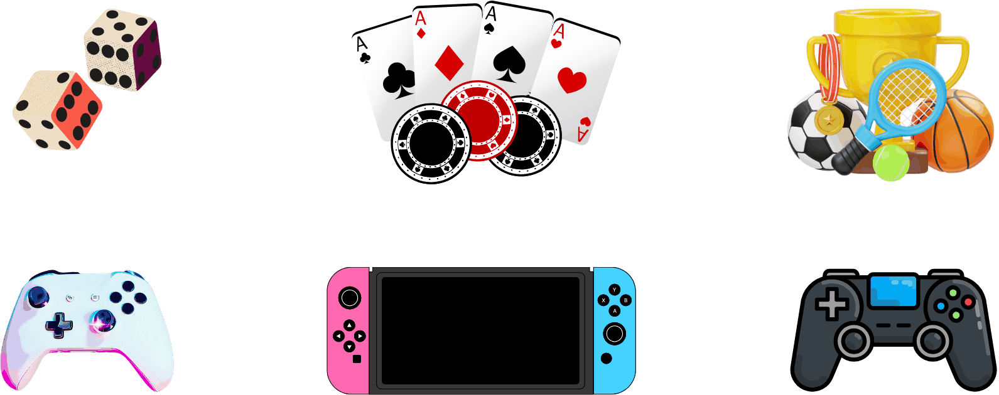
Not (necessarily) about any of these
A “game” is any situation where your best move depends on what someone else does. By that definition you play them all day:
Friends
Enemies
Family
Your employer
Classmates
Driving (merging!)
Your reputation
Your professor
Nothing here is about dice, poker, sports, or esports. The subject is strategic interdependence — and oligopoly is simply firms doing what you already do when you merge onto the Pike.
Game Theory: A Definition
The study of strategic decision-making — when multiple players each act in their own best interest and their outcomes depend on the actions of others.
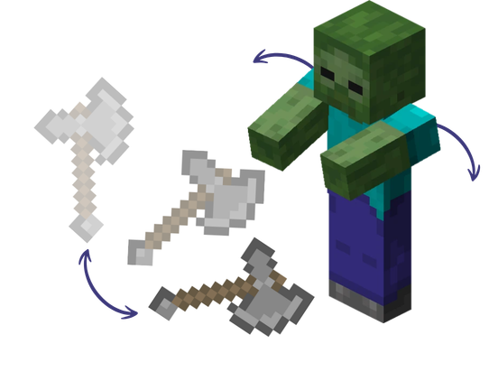
The zombie: fight or flee? — it depends on the player.
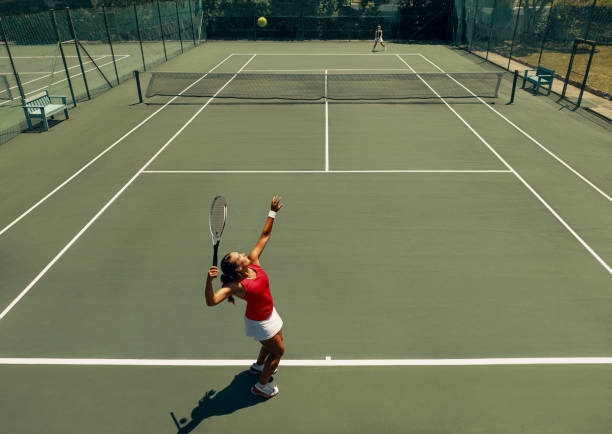
A tennis serve: aim where the returner won’t guess.
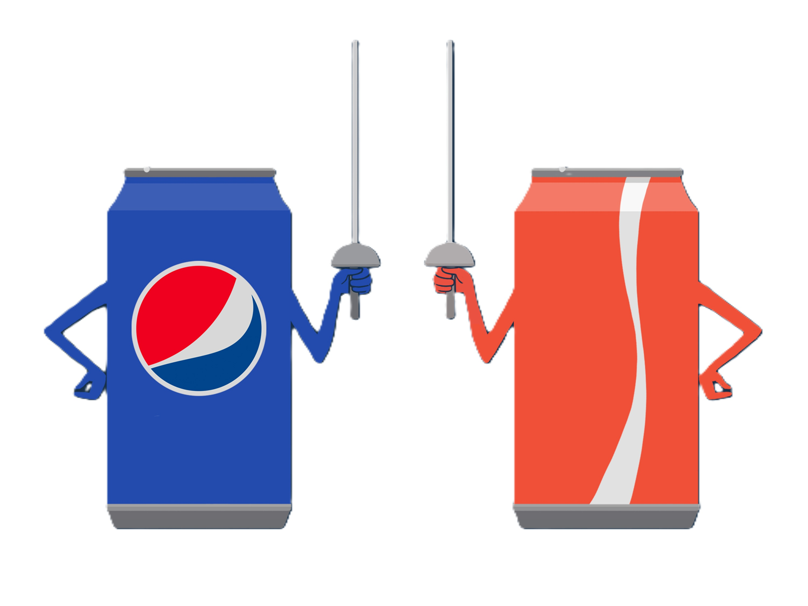
Coke vs Pepsi: each price set with one eye on the other.
A zombie, a tennis serve, a cola price war — identical logic: your payoff depends on the other player’s choice, so your best move has to anticipate it.
What Is Not a Strategic Situation?
Perfect Competition
Monopoly
Price Taker — too small to matter
Price Maker — no rivals to watch
Neither extreme is strategic: the perfect competitor can’t move the price, and the monopolist has no one to react to. Only oligopoly — a few firms watching each other — is a game.
Modeling frameworks
Game Theory vs. Decision Theory
Before the equilibria: the two ways economics models behavior — and where strategy breaks the mold
Three Ways to Model Behavior
The first two are what economists call decision theory. Both ignore anyone reacting to you — for opposite reasons. The third refuses to.
Optimization
Maximize your objective inside your constraints — and ignore every other agent.
Consumers max utility; firms max profit
Outcome
Optimum — you have no better alternative
Equilibrium
So many agents that no single one can move the outcome — so again, nobody reacts to you.
Price-takers (Ch 10); pure monopoly (Ch 11)
Outcome
Equilibrium — nobody has a better alternative
Game theory — this chapter
A few players, each best-responding to what the others do. Everyone reacts to everyone.
Outcome
Nash equilibrium — no better move given everyone else’s
Decision theory has one blind spot, reached two ways: optimization assumes nobody reacts to you; equilibrium assumes there are too many for it to matter. Oligopoly is neither — a few firms, each watching the others. That is exactly the gap game theory fills.
The classic game
Prisoner’s Dilemma
The Cold-War problem that became game theory’s most famous game
A Little History — September 1949
A US B-29 caught radioactive isotopes (Ce-141, Y-91) drifting over the Pacific — their half-lives dated a blast. The Soviets had the bomb.
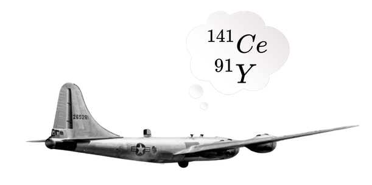
| Isotope | Half-life |
|---|---|
| Ce-141 | ~32.5 days |
| Y-91 | ~58.5 days |
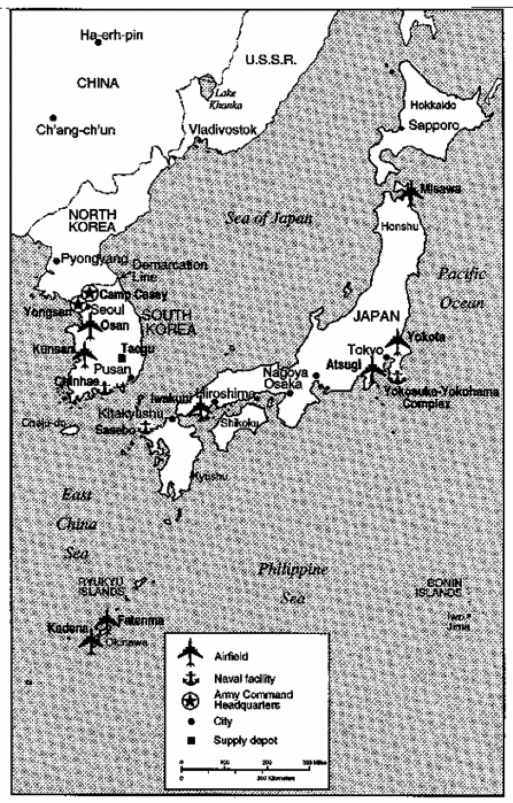
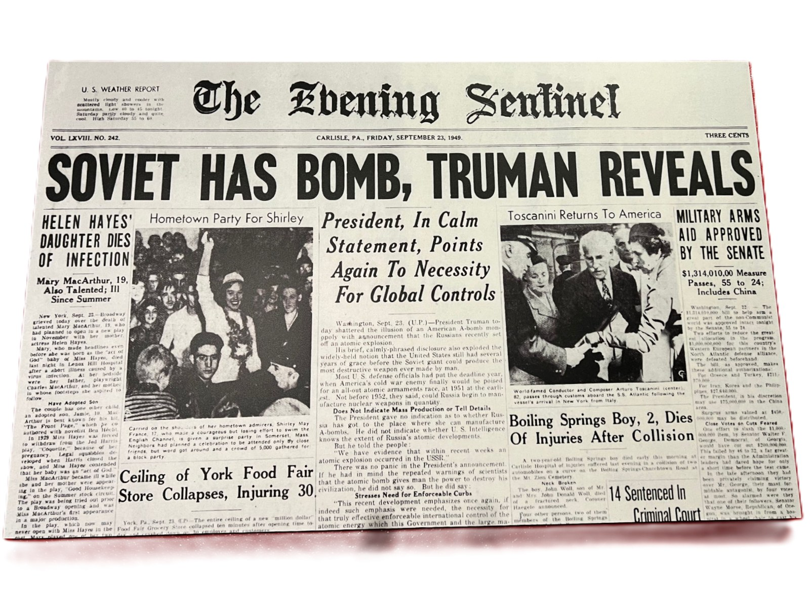
Prisoner’s Dilemma: Attack or Peace?
With both superpowers now armed, some US leaders pushed for a preemptive strike. Attack first — or keep the peace?
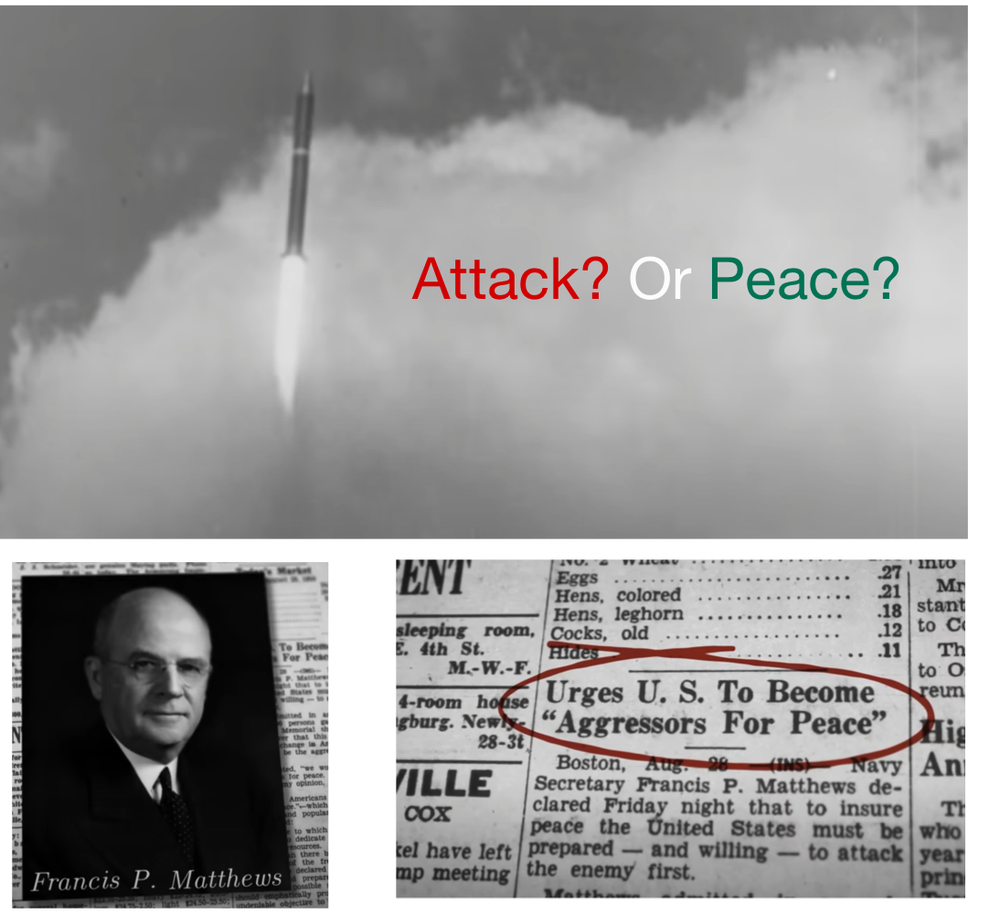
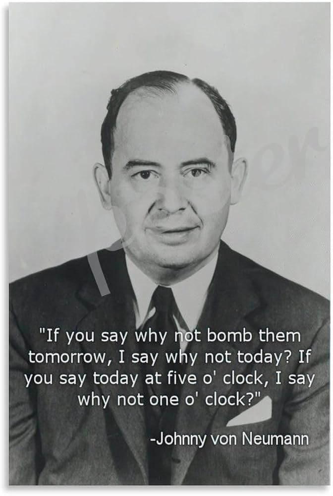
Game Theory in 1950
1944 — Theory of Games and Economic Behavior: von Neumann & Morgenstern launch game theory (2-player zero-sum games, the minimax method).
1950 — Nash Equilibrium: John Nash proves every finite game has a set of strategies where no player can gain by changing alone.
1950 — Prisoner’s Dilemma: Merrill Flood & Melvin Dresher at RAND formulate it — two rational players, each in self-interest, end up worse off than if they’d cooperated.
Relevant Topics
Models of Competition
• Price competition (Bertrand)
• Quantity competition (Cournot)
• Market entry (Stackelberg)
Applications
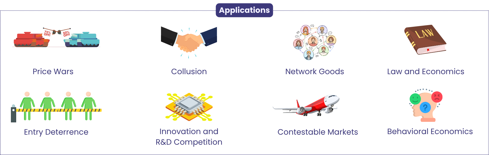
A Normal-Form Game: Three Ingredients
PLAYERS
\(\{1, \ldots, n\}\)
kicker & keeper
STRATEGIES
\(S_i\)
left or right
PAYOFFS
\(u_i(s_1,\ldots,s_n)\)
goal or save
Choices are simultaneous in the formal sense — no player observes another's before choosing. The payoff matrix records every profile: row = player 1, column = player 2, cell = \((u_1, u_2)\).
A strategy strictly dominates when it pays more for every rival choice: \(u_i(s_i, s_{-i}) > u_i(s_i', s_{-i})\) for all \(s_{-i}\). Never play a strictly dominated strategy — the sharpest prediction game theory offers.
A penalty kick is a game.
Game Theory Assumptions
Mutual interdependence: each player recognizes that outcomes depend on others’ actions.
Rationality: players choose strategies to maximize expected payoffs, given beliefs about others.
Clearly defined preferences: players have specific preferences to maximize (or minimize) payoffs.
Simultaneous-Move vs. Sequential-Move
Simultaneous-Move (basketball)
Sequential-Move (chess)
- Players decide at the same time — without knowing the other’s choice.
- Analyzed with payoff matrices (§14.1–14.3).
- Players decide one after another — later players see earlier actions.
- Analyzed with game trees (§14.4).
The First Game
Grade Game
A live prisoner’s dilemma — with your actual grade on the line
The Grade Game — Place Your Bid
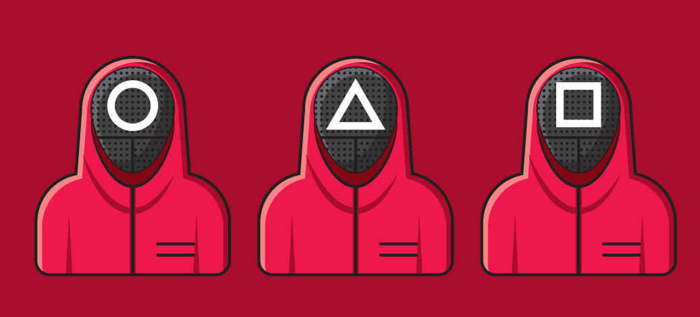
Without showing your neighbors, secretly bid alpha (△) or beta (□). I’ll randomly pair your form with one other — neither of you ever learns whose.
Place your bid ↓
The Draw — Who Got Paired?
Each click randomly pairs two anonymous bids and reveals their grades. △ = alpha, □ = beta.
§14.1
Normal-Form Games & Dominance
Players, strategies, payoffs — and the simplest prediction: never play a strictly dominated strategy
Outcome Matrix
Outcome matrix: a table that records every possible result of the game — the grades for the row player and the column player at each combination of choices. Far easier to absorb than four sentences.
| My Pair | |||
| Alpha | Beta | ||
| Me | Alpha | B− | A |
| Beta | C | B+ | |
My Grades
| My Pair | |||
| Alpha | Beta | ||
| Me | Alpha | B− | C |
| Beta | A | B+ | |
Pair’s Grades
A More Compact Representation
Superimpose the two tables — my grade first, my pair’s grade second:
| My Pair | |||
| Alpha | Beta | ||
| Me | Alpha | B− , B− | A , C |
| Beta | C , A | B+ , B+ | |
1st grade = row player (my grade) • 2nd grade = column player (my pair’s grade)
Solution Concepts
• To be a useful model, we need a solution concept to predict the outcome — otherwise, what’s the point?
• Game theory looks for the equilibrium — a no-regrets solution.
• The trick: put yourself in your pair’s shoes. Is there a strategy you always want to play?
If my pair plays Alpha…
| My Pair | |||
| Alpha | Beta | ||
| Me | Alpha | B−,B− | A,C |
| Beta | C,A | B+,B+ | |
→ I prefer Alpha (B− > C)
If my pair plays Beta…
| My Pair | |||
| Alpha | Beta | ||
| Me | Alpha | B−,B− | A,C |
| Beta | C,A | B+,B+ | |
→ I prefer Alpha (A > B+)
Dominant Strategy
Dominant strategy: the choice that yields your highest payoff regardless of what the other player does. If both players have one, the outcome is a Nash equilibrium.
Compare my two rows — is one always better?
If I play Alpha (top row)…
| My Pair | |||
| Alpha | Beta | ||
| Me | Alpha | B−,B− | A,C |
| Beta | C,A | B+,B+ | |
I get B− or A
If I play Beta (bottom row)…
| My Pair | |||
| Alpha | Beta | ||
| Me | Alpha | B−,B− | A,C |
| Beta | C,A | B+,B+ | |
I get C or B+
B− > C and A > B+ → Alpha is dominant. My pair reasons identically, so both play Alpha — a Prisoner’s Dilemma. So why can’t they both just play beta?
§14.2
Pure-Strategy Nash Equilibrium
Mutual best responses — the equilibrium concept that works even beyond dominance
Nash Equilibrium: Mutual Best Responses
Best response. Hold the others’ choices \(s_{-i}\) fixed; player \(i\) maximises their own payoff against it.
\(BR_i(s_{-i}) \;=\; \arg\max_{s_i \in S_i} u_i(s_i, s_{-i})\)
A correspondence — ties allow several best responses.
Nash equilibrium: everyone plays a best response at once. Nobody gains by deviating unilaterally.
\(s_i^{\ast} \in BR_i(s_{-i}^{\ast}) \iff u_i(s_i^{\ast}, s_{-i}^{\ast}) \geq u_i(s_i, s_{-i}^{\ast})\ \ \forall\, s_i,\ \forall\, i\)
You already found one: against Alpha your best response is Alpha, and theirs is the same — two best responses pointing at each other. Dominance is the special case, best against every \(s_{-i}\); Nash needs it only against \(s_{-i}^{\ast}\) — which is why Nash finds equilibria where dominance finds none.
| My Pair | |||
| Alpha | Beta | ||
| Me | Alpha | B−,B− | A,C |
| Beta | C,A | B+,B+ | |
Cell = (Me, My Pair).
Circled = the mutual best response.
And here is the sting. (Alpha, Alpha) = (B−, B−) is perfectly stable — yet (Beta, Beta) = (B+, B+) beats it for both of you. A Nash equilibrium is where nobody can improve alone, not where everybody does best. That gap is the Prisoner’s Dilemma — and we solve the canonical version next.
Walkthrough 14.1 — The Prisoner’s Dilemma
Problem. Two firms choose Cooperate (high price) or Defect (low price). Payoffs satisfy \(T > R > P > S\) with canonical values \((T,R,P,S) = (5,3,1,0)\). Find each firm’s dominant strategy and the equilibrium.
| Coop | Defect | |
|---|---|---|
| Coop | 3, 3 | 0, 5 |
| Defect | 5, 0 | 1, 1 |
Cell = (Firm 1, Firm 2).
green = equilibrium; amber = Pareto-best.
Set up & solve
A strategy is dominant if it’s best against every rival choice. Check Firm 1 column by column.
vs Cooperate: Defect \(5 > 3\). vs Defect: Defect \(1 > 0\). → Defect dominates.
Symmetric for Firm 2 → equilibrium \((\text{Defect},\text{Defect}) = (1,1)\).
Check
\((\text{Cooperate},\text{Cooperate}) = (3,3)\) pays both more than \((1,1)\).
Yet each gains \(T - R = 2\) by defecting on a cooperator — so \((C,C)\) is not a Nash equilibrium.
The dominant-strategy outcome is Pareto-dominated.
Takeaway. Individual and collective rationality conflict: both defect and land at \((1,1)\), worse than the \((3,3)\) they both want. No rational one-shot player escapes — the temptation gap \(T-R\) is too large. §14.5 asks when repetition closes it.
Same Structure, Real Money
Ch 13’s boba duopoly, discretised: \(P = 19.99 - 0.03Q\), \(MC = \$1\). Restrict \(= \) cartel half \((q=158)\); Flood \(= \) Cournot \((q=211)\). Cell \(=\) (Kung Fu Tea, Husky Boba) profit.
| Husky Boba | |||
| Restrict | Flood | ||
| Kung Fu Tea | Restrict | $1,503 $1,503 |
$1,251 $1,671 |
| Flood | $1,671 $1,251 |
$1,336 $1,336 | |
Flood wins in both columns: \(\$1{,}671 > \$1{,}503\) and \(\$1{,}336 > \$1{,}251\). Dominant — and by symmetry for Husky too.
Nash: (Flood, Flood) = \(\$1{,}336\) each — below the \(\$1{,}503\) they’d earn colluding at Restrict, because neither can trust the other. Cournot competition is a prisoner’s dilemma — the same \((5,3,1,0)\) you just solved, with dollar signs.
Poll — Why Don’t They Cooperate?
The two firms could both Cooperate (high price) and earn (3, 3) instead of (1, 1). A friend says “just agree to both Cooperate.” What’s the problem?
A. No problem — they’ll both Cooperate and stay there
B. Each is tempted to secretly Defect (earn 5 on a cooperator) — so the deal unravels
C. Cooperating (high prices) is illegal, so they can’t
D. Customers wouldn’t notice the difference anyway
Click your answer. Press ↓ for results.
Poll Results
Answer: B. The cooperative (Cooperate, Cooperate) = (3, 3) is not stable. Each firm earns 5 by defecting while the other cooperates — so both are tempted, and the deal collapses to (Defect, Defect) = (1, 1).
That is the prisoner’s dilemma: the agreement is exactly the unstable cell. §14.5 shows how repetition can rescue it.
Nash \(\neq\) Efficient, and Nash \(\neq\) Unique
Heads Up 14.1 — two traps
Trap 1: “Nash is rational play, so it must be the best joint outcome.” The PD refutes this: \((D,D)\) is the unique NE and Pareto-dominated by \((C,C)\). Nash is about individual rationality, not group welfare.
Trap 2: “A game has one equilibrium.” BoS has two pure NE. The model alone doesn't pick one — selecting requires a focal point (Schelling 1960): custom, communication, or a salient feature of the payoffs.
Recall from Principles — 1116 §13.3
1116 defined Nash equilibrium informally: “each player is choosing the best response to the others — no one wants to deviate unilaterally,” after John Forbes Nash Jr. (Nobel 1994).
The 1116 example was the gas-station price war: \((\text{Low}, \text{Low})\) is Nash because neither station gains by going High while the rival stays Low. Same definition — we now write best response as a formal correspondence, and iterated elimination gives us a way to search.
Why Nash still predicts: firms need not communicate or even know game theory — by watching rivals and adjusting, markets converge on Nash through trial and error. It is self-enforcing — stable, just not efficient. (Empirical IO often takes the symmetric equilibrium as the focal point for homogeneous industries.)
Pareto Improvement, But Not Individually Stable
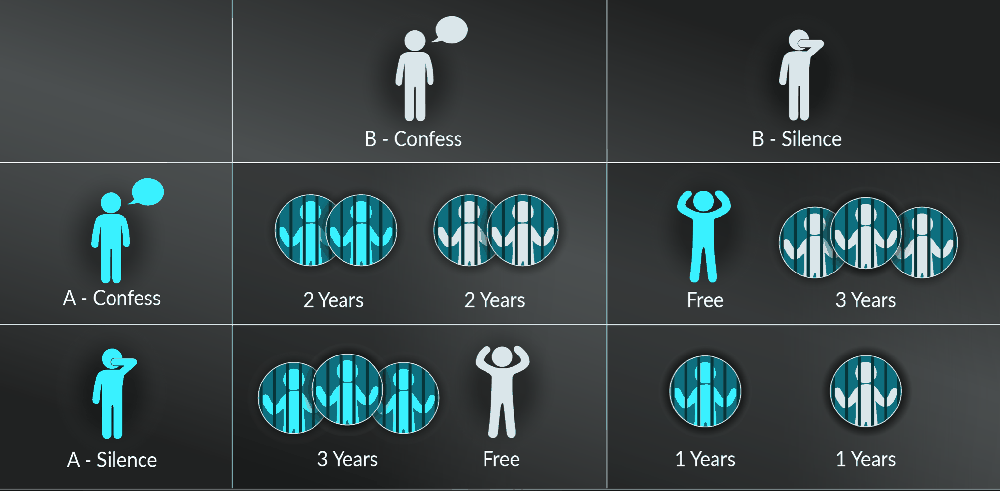
Both confessing (2, 2) is the Nash equilibrium — stable, but both go to jail. Both staying silent (1, 1) is better for both (a Pareto improvement) — yet each is tempted to defect, so it won’t hold on its own.
The Prisoner’s Dilemma Is Everywhere
The same trap shows up across economics — rational individuals, collectively worse off:
Joint project — each member is tempted to avoid effort (free-ride).
Price competition — firms undercut each other, lowering profits.
Advertising war — firms keep spending to compete → a suboptimal Nash.
Common resources — carbon emissions, overfishing (Ch 17).
Potential solutions? Communication, repeated play, binding contracts, regulation — anything that lets players trust cooperation. (We’ll see repeated games in §14.5.)
A real-world prisoner’s dilemma
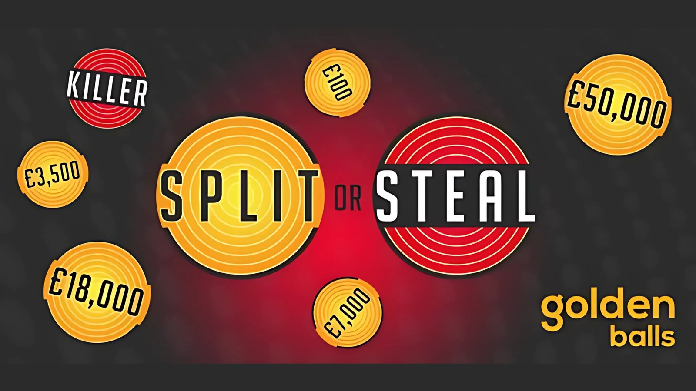
The British game show Golden Balls: two strangers, one jackpot, one choice — Split or Steal.
They’re allowed to talk first — so will communication help?
Split or Steal — The Setup
Two contestants have built up a jackpot. Each secretly picks a Split or Steal ball. ▶ Click to watch (sound on).
Payoff Matrix
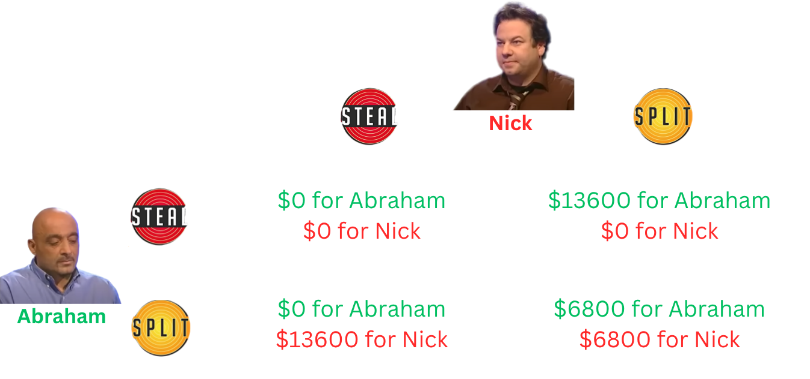
Communication: allowed — the players can talk it out before they choose.
Nick’s Gambit
Nick tells Abraham: “I’m going to Steal — but I promise I’ll split the money with you afterward.” ▶ Click to watch (sound on).
Nash Equilibria and Commitment
| Nick | |||
| Steal | Split | ||
| Abraham | Steal | $0 / $0NE | $13.6k / $0NE |
| Split | $0 / $13.6kNE | $6.8k / $6.8k | |
Counting weak ties, all 3 gold cells are Nash equilibria — in each, the $0 loser can’t do any better by switching.
Did communication help? Not on its own — talk is “cheap.” Steal weakly dominates, so the trap both fall into is the focal (Steal, Steal) = $0 each.
Commitment → removing options. Nick committed to Steal & promised to share — removing Abraham’s reason to Steal. So Abraham split… and Nick split too. $6,800 each.
Strict vs Weak Dominance — Side by Side
Strict: \(u_i(s_i, s_{-i}) > u_i(s_i', s_{-i})\) for every \(s_{-i}\). Weak: \(\geq\) for every \(s_{-i}\), with \(>\) somewhere. The whole difference is whether a tie is allowed.
Strict — the Prisoner’s Dilemma
| Cooperate | Defect | |
|---|---|---|
| Cooperate | 3, 3 | 0, 5 |
| Defect | 5, 0 | 1, 1 |
Against Cooperate: \(5 > 3\). Against Defect: \(1 > 0\). Strictly better in both columns — so Cooperate is strictly dominated, and IESDS deletes it safely.
Weak — Golden Balls
| Split | Steal | |
|---|---|---|
| Split | 50, 50 | 0, 100 |
| Steal | 100, 0 | 0, 0 |
Against Split: \(100 > 50\). Against Steal: \(0 = 0\) — a tie, not a win. Never worse, sometimes better: Steal only weakly dominates Split.
We build predictions on strict dominance because deleting is then safe — a strictly dominated strategy is never a best response to any belief, no Nash equilibrium is ever lost, and the deletion order cannot change the answer. Weak dominance has neither guarantee: eliminating weakly dominated strategies can destroy equilibria, and different orders can leave different survivors. Hence Golden Balls has a focal \((\text{Steal}, \text{Steal}) = \$0\) each, yet the tie leaves just enough room for Nick’s gambit to work.
Iterated Elimination — Putting the Pieces Together
A new word — the mirror of dominant. A strategy \(s_i\) is strictly dominated if some other strategy beats it against every rival choice: \(u_i(s_i', s_{-i}) > u_i(s_i, s_{-i})\) for all \(s_{-i}\). It is never a best response — so a rational player never plays it.
1. Delete every strictly dominated strategy.
2. You now face a smaller game — and everyone knows it.
3. A strategy that survived may be dominated now. Look again. Repeat until nothing more can go.
That loop is iterated elimination of strictly dominated strategies (IESDS). It is a sound search: it never deletes a Nash equilibrium, so every NE survives — and if exactly one profile survives, it must be the unique NE. With strict dominance the order you delete in never changes the answer.
Where we are
Each rung needs one more layer of “and everyone knows that everyone knows…” — which is why the next slide is a game, not a proof.
One More Bid — The Guessing Game
Pick a whole number from 1 to 100. I’ll average every guess in the room and multiply by ⅔. Whoever lands closest to that target wins.
Don’t overthink it — but do think about what everyone else is about to do. Sixty seconds, then we open the box.
Your guess ↓
Opening the Box — Where Did You Guess?
Shaded bands mark guesses that cannot win — we prove that next.
The Ladder — IESDS With 100 Strategies
The elimination loop you just defined — now run on a game with 100 strategies instead of two. Delete what can never be a best response, then look again.
The average can be at most 100, so the target can be at most \(\tfrac{2}{3}(100) = \mathbf{66.7}\). Any guess above 66.7 is strictly dominated — 66.7 is closer to every possible target. delete (66.7, 100]
If everyone knows that, nobody guesses above 66.7 → the average is at most 66.7 → the target is at most \(\tfrac{2}{3}(66.7) = \mathbf{44.4}\). delete (44.4, 66.7]
If everyone knows that… ceiling \(= \mathbf{29.6}\). delete (29.6, 44.4]
19.8 → 13.2 → 8.8 → 5.9 → 3.9 → … each round multiplies the ceiling by \(\tfrac{2}{3}\).
The ceiling falls below the floor, so only 1 survives. \(\mathbf{(1,1,\ldots,1)}\) is the unique Nash equilibrium — IESDS never deletes a Nash equilibrium, so a lone survivor must be the only one.
Check it in dollars: everyone bids 1 → target \(0.67\) → you all tie → the $5 splits, \(\approx\$0.20\) each. Bid 2 on your own → the others are closer → $0. Nobody gains by moving alone — that is the definition, in cash.
So why didn’t you all guess 1? Because rung \(k\) needs “everyone knows that everyone knows…” \(k\) times over — common knowledge of rationality, the assumption we posted at the top of class. You are rational. You just (correctly) doubted that everyone else would climb all the way.
Escaping the Dilemma — What Actually Works
Nick talked his way to Split — but that was a bluff that happened to land. Can cooperation be made rational rather than lucky? Promises alone don’t move a Nash equilibrium; only a change to payoffs, information, or the number of rounds does. Four mechanisms, each with a real case.
1. Commitment, not conversation
Talk is cheap; a commitment that is costly to reverse is not. Firms post price-match guarantees and most-favored-nation clauses — publicly binding themselves to match any cut. That makes undercutting pointless, so nobody starts. A tool sold as pro-consumer that quietly stabilises high prices.
Nick’s “I will Steal” gambit was the same move on live TV.
2. Change the payoffs — reward the first defector
The DOJ Corporate Leniency Policy (and the EU equivalent) gives full immunity to the first cartel member who comes forward — and nothing to the second. Antitrust enforcers deliberately build a prisoner’s dilemma inside the cartel: now defecting on your co-conspirators is dominant.
Same logic as the original police interrogation — aimed at price-fixers.
3. Play it again — and be able to see cheating
Repetition only disciplines players who can detect defection. That is why cartels invest in monitoring, and why the same transparency can cut both ways: the price app in the gas-station opener made undercutting instant and killed the truce.
OPEC+ (seen earlier); formalised as grim trigger in §14.5.
4. An outside rule that binds everyone at once
A regulator can impose the cooperative cell no player can reach alone — the 1971 cigarette ad ban did exactly that — two slides on we work the numbers. But the rule has to bind: the Paris Agreement sets emissions targets each country writes for itself, with no enforcement, so the free-riding dilemma survives the treaty.
A rule without teeth leaves the payoffs — and the equilibrium — untouched.
When You Can’t Take the Deal to Court
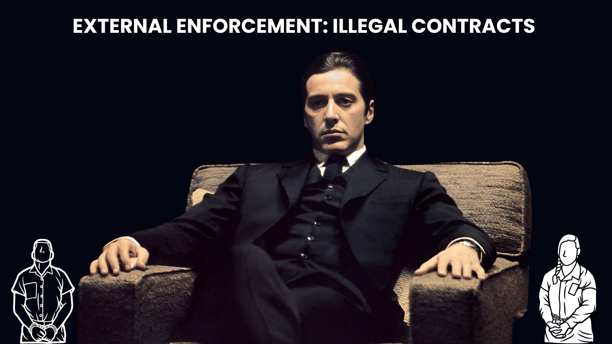
No court enforces a price-fixing deal — so the enforcement has to come from somewhere else.
The deal alone
| B: Confess | B: Silent | |
|---|---|---|
| A: Confess | 2, 2 | 0, 3 |
| A: Silent | 3, 0 | 1, 1 |
Years in prison — lower is better.
Confess is dominant → (2, 2). The promise to stay silent is worthless.
… plus a cost on talking
| B: Confess | B: Silent | |
|---|---|---|
| A: Confess | 5, 5 | 3, 3 |
| A: Silent | 3, 3 | 1, 1 |
Confessing now also costs \(c = 3\) years’ worth of harm to you or your family.
Silence is dominant → (1, 1) — and it is now Pareto-best and stable.
Nothing about the crime changed — only the payoff to talking. Add a cost \(c\) to Confess and Silence becomes dominant as soon as \(c > 1\) year: the threat has to outweigh the one year the deal saves, not a lifetime. That is the whole economics of omertà — and the reason antitrust leniency runs the lever the other way, paying the first talker instead of punishing them.
The Ad War — When the Rule Deletes a Strategy
The Public Health Cigarette Smoking Act banned cigarette ads on TV and radio from January 1971. The tobacco firms barely fought it — the matrix explains why.
| B: Don’t | B: Advertise | |
|---|---|---|
| A: Don’t | 50, 50 | 25, 60 |
| A: Advertise | 60, 25 | 40, 40 |
Annual profit, \($\)m — higher is better. Pink = one-shot NE; green = what survives the ban.
1 — Dominance. \(60 > 50\) and \(40 > 25\): Advertise dominates, for both firms. Equilibrium (Advertise, Advertise) = \($40\)m — below the \($50\)m of mutual silence. A prisoner’s dilemma fought with ad budgets.
2 — The ban. Congress taxes nothing and subsidises nothing. It strikes Advertise from the strategy set, every firm, same day — so that row and column simply go.
3 — One cell left. (Don’t, Don’t) = \($50\)m each. Ad spend fell about a quarter; profits rose. The firms were handed the cooperation they could never reach alone — by the people trying to punish them.
Not one payoff changed. The regulator removed a strategy, not a payoff — the mirror of the ladder: IESDS deletes what nobody would choose; this ban deleted what everybody would. Both shrink the game to one cell.
Round 2 — Play It Again, Now With Education
Exactly the same rules — whole number 1–100, closest to ⅔ of the class average takes the $5. The only thing that changed: everyone in this room has now seen the ladder and last round’s histogram.
The payoffs did not move. The strategies did not move. Beliefs moved — and beliefs are an input to equilibrium.
That is escape routes 3 and 4 running at once: repetition (you get a second round) and education (I just taught you the ladder). And I am about to add the third — I will walk the room and advise you. Watch what a leader does to a belief.
Your guess ↓
Round 1 vs. Round 2 — Beliefs Move, Not Payoffs
Round 1 — before the ladder
Round 2 — after the ladder
Walkthrough 14.2 — Iterated Elimination (IESDS)
Problem. No strategy is dominant outright — so run the same IESDS loop you just used on the guessing game, now on a finite grid where you can see every deletion. Row chooses \(A,B,C\); Column chooses \(X,Y,Z\). Payoff \(=\) (Row, Column).
| \(X\) | \(Y\) | \(Z\) | |
|---|---|---|---|
| \(A\) | 4, 3 | 2, 7 | 0, 4 |
| \(B\) | 5, 5 | 5, 1 | 2, 0 |
| \(C\) | 3, 4 | 1, 6 | 1, 2 |
A crossed-out strategy is strictly dominated that round.
Round 1 — Column: \(Y\) beats \(Z\) in every row (\(7>4,\; 1>0,\; 6>2\)). \(Z\) is strictly dominated → delete \(Z\).
Round 2 — Row: with \(Z\) gone, \(B\) beats \(A\) (\(5>4,\,5>2\)) and \(C\) (\(5>3,\,5>1\)) → delete \(A\) and \(C\).
Round 3 — Column: only row \(B\) is left; \(X\) beats \(Y\) (\(5>1\)) → delete \(Y\).
Survivor: \((B,X)=(5,5)\) — the unique Nash equilibrium.
Takeaway. IESDS never deletes a Nash equilibrium, so every NE survives the process. When a single profile survives — as here — it must be the unique NE. For strict dominance, the order you eliminate in never changes the answer.
§14.5
Repeated Games
When the game never ends, cooperation can survive — firms compete again and again, and engineer ways to escape the trap.
One-Shot vs. Repeated
A one-shot game is played once: two gas stations on the same corner set price a single time, and the dominant-strategy logic forces (Low, Low).
Repeated game: the same players interact over and over — so strategies can depend on past behavior, and cooperation impossible in one shot becomes sustainable.
Real firms compete quarter after quarter. Today’s price affects tomorrow’s relationship — and that hands each player two instruments a one-shot game never gives them:
Carrot — reward
Hold your price up today and I hold mine up tomorrow, and every quarter after. Cooperation buys future cooperation.
Stick — punish
Undercut me and I retaliate — a price war, an ad war, or silence forever after. One good quarter buys a long bad stretch.

A one-shot game gives you neither. There is no “later” in which to hand out a reward or withhold one, so the only thing disciplining you is the payoff in front of you — and in a prisoner’s dilemma that always says defect. Repetition changes no payoff in the matrix; it hands each player a carrot and a stick. Whether they are strong enough to hold the truce depends on how much you value tomorrow — the discount factor \(\delta\), next.
Repeated Games in the Wild
TSMC & Apple — mutual lock-in
Apple designs chips it can’t build; TSMC builds them in $15–20B fabs it can’t repurpose. TSMC’s no-compete pledge (it never sells products competing with customers) is a credible commitment. Each product cycle is another round.
Uber & Lyft — tacit duopoly
Two platforms, near-identical prices and surge patterns. Neither needs to call the other: each knows a cut will be matched within hours, making a price war pointless. Repeated interaction sustains it.
Coke & Pepsi — taking turns
Two brands chasing the same switchers. Deep-discount in the same week and they merely split them; alternate weeks and each gets the category to itself. Lal (1990) shows alternating promotions is a subgame-perfect equilibrium of the infinitely repeated game — implicit collusion that needs no phone call.
Gasmi, Laffont & Vuong (1992), on 1968–86 Coke/Pepsi data: tacit collusion in advertising is supported; on price it is not.
Reputation as a commitment device. A firm known for keeping its word has more to lose from defecting — so partners trust it, enabling more cooperation. Investment banks, law firms, and builders invest heavily in reputational signals for exactly this reason. (Online platforms scale reputation to millions of users.)
Two Kinds of Repetition — Finite vs. Infinite
In a repeated game the same players play the same stage game again and again, and each of them knows the whole history of what the other has done. That history is what makes a carrot or a stick possible at all — but how the game ends decides whether they work.
Finitely repeated
A known final round. Both players can see the end coming.
A supplier contract with 12 months left to run; a store announcing a closing-down sale; a partner’s last quarter before retirement.
The stick loses its bite in the last round — and then, by backward induction, in every round before it.
Infinitely repeated
No final round — or nobody knows which one it is.
Two gas stations on the same corner; Coke and Pepsi; OPEC+ members expecting to still be pumping next decade.
There is no last round to reason back from, so the threat of punishment stays alive.
What matters is not literally “forever” — it is whether there is a known last round. A known ending gives you somewhere to start reasoning backwards from; an unknown ending does not. That single difference decides whether cooperation can survive, and we prove it both ways in the next few slides.
Finite Repeated PD: It Unravels
The firms play the PD a known, fixed number of times — say twice. Solve by backward induction: start at the last round and reason back.
| Coop | Defect | |
|---|---|---|
| Coop | 3, 3 | 0, 5 |
| Defect | 5, 0 | 1, 1 |
Same PD. Defect strictly dominates any one-shot play (\(5>3,\; 1>0\)).
Round 2 (the last play): nothing comes after, so no future punishment can deter anyone. Defect dominates → (Defect, Defect) = \((1,1)\).
Round 1: both already know Round 2 will be \((D,D)\) no matter what — cooperating now buys no future goodwill. So Defect again → (Defect, Defect) = \((1,1)\).
Defect in both rounds — total \((2,2)\), not the \((6,6)\) of cooperating twice.
You have seen this. Economists call it the lame-duck or endgame effect — wherever the last round becomes visible, cooperation thins out:
Lame-duck official
Term-limited, nothing left to be re-elected to — promises to voters get cheap.
Last week of term
Group projects where you will never see these classmates again.
Final quarter before retirement
A reputation you spent 30 years building stops paying next month.
Closing-down sale
The shop that will not be there to honour the warranty.
Careful: the theory says defect from round one. Real people mostly cooperate until the end is in sight, then collapse — unravelling from the back, not all at once.
A known last round poisons every round before it. By backward induction the finite game unravels to all-Defect — no matter how many rounds (Selten’s chain-store paradox). So how can cooperation ever survive? Remove the known endpoint. →
No Last Round to Induct From
Last slide the argument started at the end and walked backwards. Take the end away and that argument has nowhere to stand — there is no final round whose outcome is obvious, so nothing to reason back from.
“Infinite” has two readings — and they are the same mathematics.
1. Play forever, weighting each future period a little less.
2. Each round the game continues with some probability — it may stop at any time, but never on a date anyone knows.
Reading 2 is the realistic one: no firm lasts forever, but none of them knows which quarter is the last.
So we change method. Instead of solving for the equilibrium, we propose a strategy and test it: assume the rival plays it, and ask whether you could do better by deviating. If nobody can, it is a Nash equilibrium.
| Coop | Defect | |
|---|---|---|
| Coop | 3, 3 | 0, 5 |
| Defect | 5, 0 | 1, 1 |
The same stage game, now played round after round.
Coop = hold the truce; Defect = advertise / cut price.
Two things have to be built before we can run that test: how much a future payoff is worth today (next slide), and which strategy we are testing (the one after). Then the check is a single inequality.
Discounting the Future
Future payoffs are worth less today — impatience plus positive interest rates. Discount each period ahead by a factor \(\delta\), with \(0 < \delta < 1\):
\(\$1\text{ next period} \;=\; \$\delta\text{ today}\)
\(\delta\) is doing two jobs at once. If the game also survives each round with probability \(p\), and money earns interest \(r\), the two fold into a single number: \(\delta = \dfrac{p}{1+r}\). So \(\delta\) measures patience and survival together — a firm that expects to fold soon behaves exactly like an impatient one.
\(\delta\) high (e.g. 0.8) — patient
A future dollar is worth ~80¢ now. The players value tomorrow almost as much as today → a permanent punishment stings → cooperation easier.
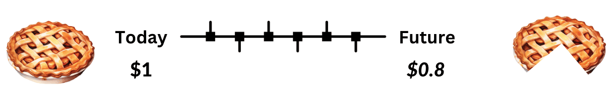
\(\delta\) low (e.g. 0.2) — impatient
A future dollar is worth ~20¢ now (high interest, near bankruptcy). The future barely counts → grab the defection payoff now.
Patience is the whole story: the higher \(\delta\), the more a forever-punishment outweighs a one-time gain. Keep \(\delta = 0.8\) and \(\delta = 0.2\) in mind — in two slides we find the exact cutoff between them.
The Strategy We Will Test: Grim Trigger
Grim trigger: cooperate every period — but if the rival ever defects, defect forever after.
One slip and the truce is over permanently. No apologies, no second chances — which is exactly what makes the threat worth fearing.
Suppose your rival is playing it. You have two options, and the whole chapter comes down to comparing them:
Hold the truce
3 every period, for as long as the game lasts.
Break it once
5 today — then 1 every period after, forever.
| Coop | Defect | |
|---|---|---|
| Coop | 3, 3 | 0, 5 |
| Defect | 5, 0 | 1, 1 |
The trade, in two numbers.
Cheating gains you \(5-3=2\) — once.
It costs you \(3-1=2\) — every period after.
So the question is not whether cheating costs more than it gains — a stream of 2s obviously beats a single 2. It is whether those future 2s, discounted back to today, still add up to more than 2. That depends entirely on \(\delta\).
Two Payoff Streams: Cooperate vs. Defect
Compare Row’s two options as discounted streams (against a rival playing grim trigger):
Cooperate forever
\(3 + 3\delta + 3\delta^2 + 3\delta^3 + \cdots\)
A steady 3 every period, discounted.
Defect now, then punished
\(5 + 1\delta + 1\delta^2 + 1\delta^3 + \cdots\)
Grab 5 today — then both stuck at 1 forever.
Grim trigger is a Nash equilibrium exactly when cooperating beats defecting — when the discounted punishment outweighs the one-shot temptation. Set up the inequality next.
The Threshold: How Patient Is Patient Enough?
Refresher: the geometric series
Adding infinitely many terms does not give infinity, as long as each one is a fixed fraction of the last. For \(0 \le x < 1\):
\(x + x^2 + x^3 + \cdots \;=\; \dfrac{x}{1-x}\)
Why: call the sum \(S\). Multiply by \(x\): \(xS = x^2 + x^3 + \cdots\), which is \(S\) missing its first term. So \(S - xS = x\), giving \(S = \dfrac{x}{1-x}\).
Try \(x = \tfrac12\): \(\tfrac12 + \tfrac14 + \tfrac18 + \cdots = \dfrac{0.5}{0.5} = 1\).
Halving forever adds up to exactly 1 — remember that number.
Cooperation holds when the truce stream beats the cheat stream:
\(3 + 3\delta + 3\delta^2 + \cdots \;>\; 5 + \delta + \delta^2 + \cdots\)
\(2\,(\delta + \delta^2 + \delta^3 + \cdots) \;>\; 2\)
Take a 3 and a \(\delta\)-tail off both sides: you gain 2 today, you lose 2 in every later period.
\(\dfrac{\delta}{1-\delta} \;>\; 1\)
Divide by 2, then use the refresher on the left.
\(\delta \;>\; \tfrac{1}{2}\)
Cross-multiply: \(\delta > 1-\delta\). And that is the number from the box on the left.
In words: if a dollar next period is worth at least 50¢ to you today, the truce holds. Any less and you take the 5 and run. The general rule is \(\delta \ge \dfrac{T-R}{T-P} = \dfrac{5-3}{5-1} = \tfrac12\) — what you gain by cheating over how far you fall.
The Folk Theorem & the Discount Factor
Folk theorem: in an infinitely repeated game, players patient enough can sustain cooperation as an equilibrium. “I won’t torch a 20-year relationship for one quarter’s gain.”
Why truces break in recessions. A downturn hits \(\delta = p/(1+r)\) from both sides: survival \(p\) falls and the cost of capital \(r\) rises. \(\delta\) slips under the threshold and the cooperative equilibrium stops existing — without anyone’s preferences having changed.
Read the picture: the polygon is every payoff pair the two players could feasibly split. The shaded part is what beats each player’s punishment payoff — individually rational. As \(\delta \to 1\), every point in the shaded region is sustainable as a subgame-perfect equilibrium.
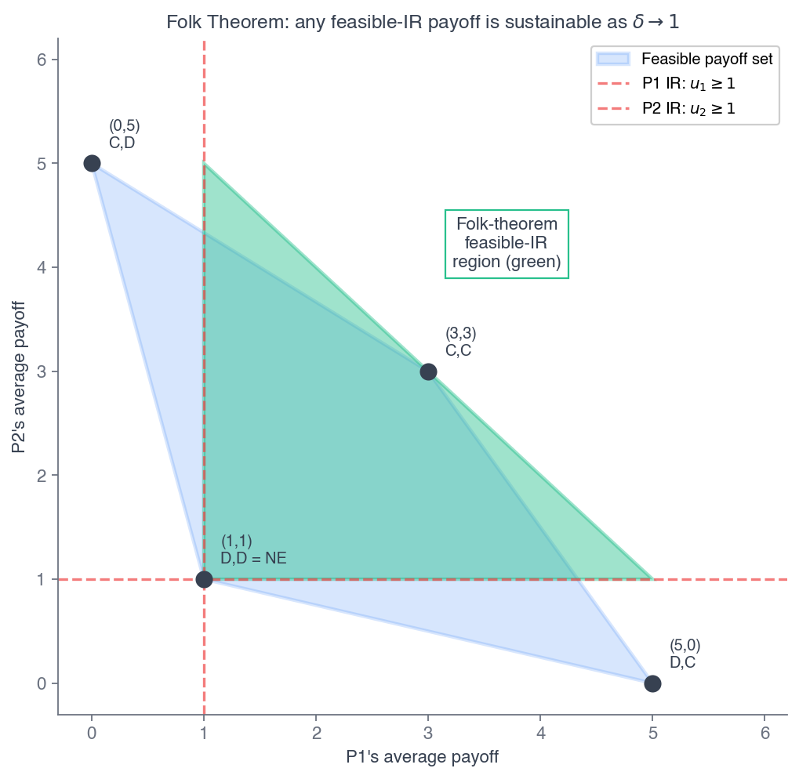
Figure 14.7 — feasible payoffs, and the individually-rational set patience makes reachable.
Read it as a warning, not just a result. You proved one point — \(\delta > \tfrac{1}{2}\) sustains cooperation in that matrix. The folk theorem says that as \(\delta \to 1\) almost every individually-rational payoff becomes sustainable too. So the model predicts a region, not a point: repetition tells you cooperation can hold, never that it will. What actually picks one outcome — monitoring, focal points, communication, or an algorithm’s learning rule — is §14.6.
Application: OPEC+ as a Repeated Cartel Game
OPEC+ is the largest functioning real-world repeated-game cartel. Two structural features keep it alive:
Monitoring. The Joint Ministerial Monitoring Committee tracks compliance and makes overproducers compensate with deeper later cuts — a multi-period punishment, exactly the grim-trigger threat.
Flexibility. Quotas are revised at quarterly meetings (Dec 2024 extension; Apr 5 2026 unwinding), preventing breakdown under demand shocks.
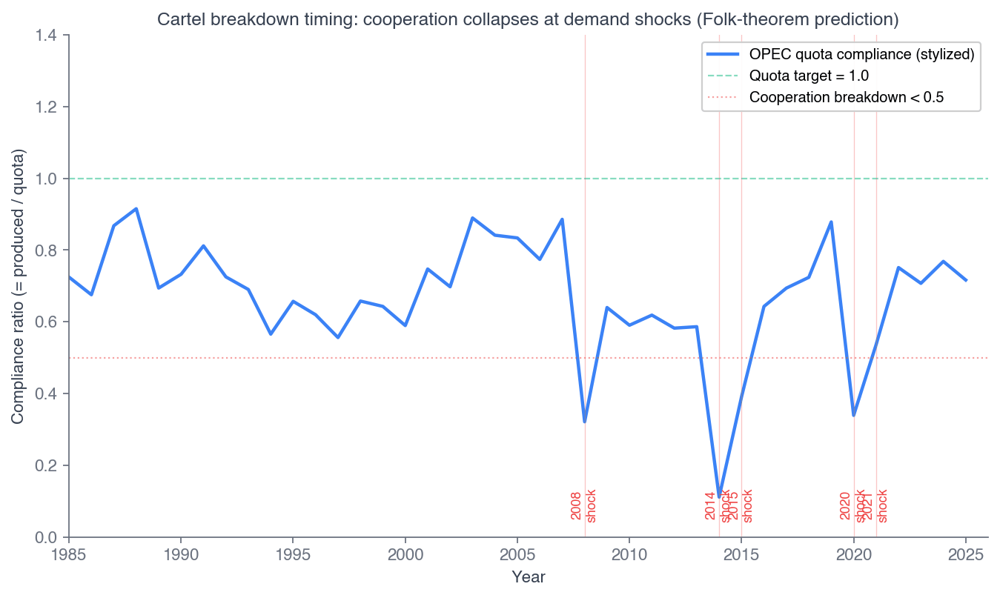
Cooperation collapses at demand shocks (2008, 2014–15, 2020) — then re-forms.
The compliance series is the grim-trigger model in the wild: cooperation holds in normal times, breaks when a shock makes defection's short-run gain spike past the punishment value, then re-forms (Green-Porter 1984 imperfect-monitoring dynamics). Monitoring + flexibility are how a many-member cartel keeps \(\delta^{\ast}\) attainable.
Coordinating Without Talking
Tacit collusion: price coordination with no explicit agreement — through signaling, parallel behavior, or the shared expectation that rivals will match.
Price-match guarantees — that wall of logos from the start of class — sound pro-consumer, but they remove the temptation to defect. If Best Buy will instantly match any cut, Target gains nothing by undercutting. The “Low” row disappears; both hold High.
The FTC has long seen the danger: Ethyl Corp. v. FTC (1984) challenged most-favored-customer clauses among gasoline-additive makers as facilitating practices that softened competition.
Prisoner’s Dilemma: The Price War
| P=$200 | P=$100 | ||
| P=$200 | $30K for Target $30K for BestBuy |
$10K for Target $40K for BestBuy | |
| P=$100 | $40K for Target $10K for BestBuy |
$20K for Target $20k for BestBuy | |
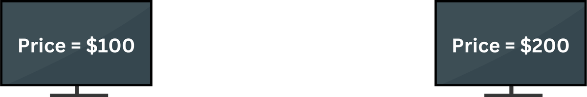
Each chain’s best move is to undercut → the Nash equilibrium is (P=$100, P=$100) = $20K each, worse than the $30K each they’d earn by both holding at $200. A price war is a prisoner’s dilemma.
Why Offer a Price-Match Guarantee?
| B: $200 | B: $100 | |
| T: $200 | $30K / $30K | $10K / $40K |
| T: $100 | $40K / $10K | $20K / $20KNE |
NE is still the low price ($100) — (Target / Best Buy)
The Nash equilibrium is still the lower price ($100) — competition is real. The guarantee’s trick: a store can post $200 and not lose sales. Anyone who finds it cheaper just gets matched to $100, so they never switch to the rival. Bargain-hunters effectively pay $100; everyone else pays the $200 sticker. (That’s the answer to our opening puzzle!)
The Price War — In the Wild
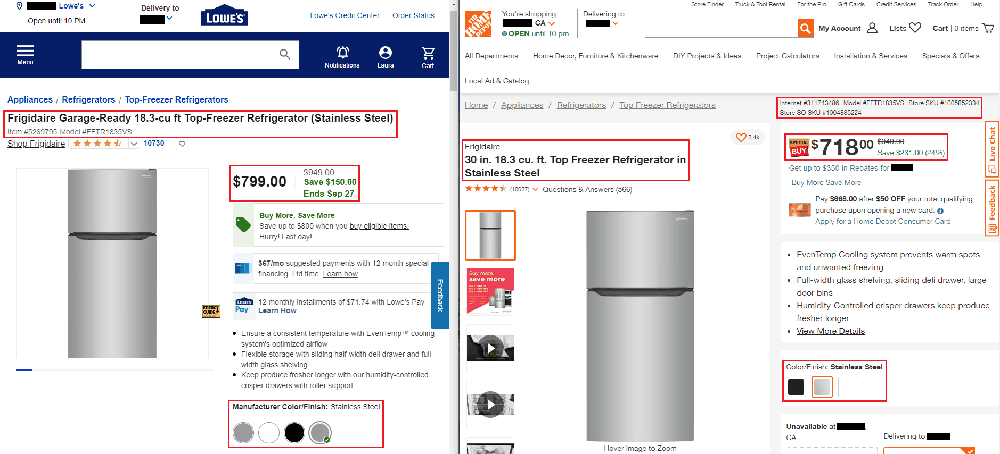
The same Frigidaire fridge (model FFTR1835VS): $799 at Lowe’s, $718 at Home Depot. Both advertise price-match guarantees — so the “war” rarely actually breaks out. Identical products, near-identical prices: oligopoly in action.
§14.6
Attempts to Sustain Collusion
How firms try to hold a cartel together — and why it still cracks
Sustaining Collusion: The Lysine Cartel
Archer Daniels Midland (USA), Ajinomoto (Japan), Kyowa Hakko Kogyo (Japan), and Sewon (South Korea) held secret meetings to fix the price of lysine — a feed additive — through the 1990s.
• Regular meetings & communication: agree on price, split the market, and settle disputes — so no member starts an unnecessary price war.
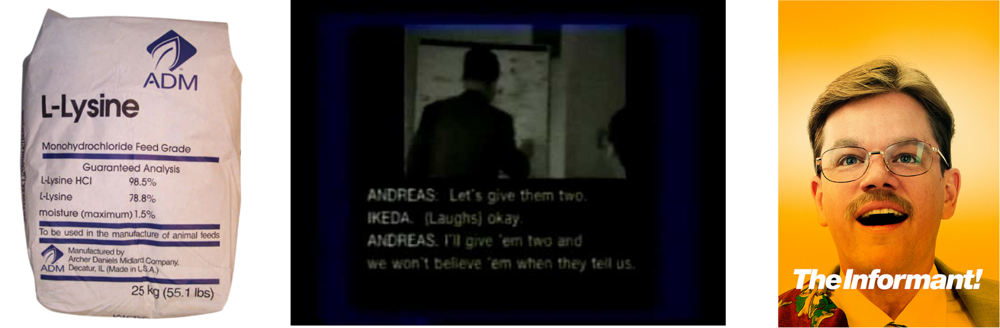
An internal FBI informant (Mark Whitacre) secretly taped the meetings and brought the cartel down. Under the Sherman Act, price-fixing is illegal — explicit or tacit.
The Informant! — Inside the Lysine Cartel

The 1990s lysine cartel met in hotel rooms to fix prices — their motto: “the competitor is our friend.”
ADM executive Mark Whitacre turned FBI informant and wore a wire. The tapes — “let’s give them two” — convicted them under the Sherman Act.
▶ Click the poster to play (sound on).
Sustaining Collusion: The Turbine Triopoly
1950s turbine market — a triopoly selling to electric utilities: GE 60% · Westinghouse 30% · Allis-Chalmers 10%.
They held that split with a clever scheme. When a utility put a turbine out to bid, who won depended on the day of the month:
• Days 1–17: Westinghouse & A-C bid high → GE wins
• Days 18–25: GE & A-C bid high → Westinghouse wins
• Days 26–28: GE & Westinghouse bid high → Allis-Chalmers wins
This “phases of the moon” rotation preserved the 60–30–10 split, and any cheating was instantly visible to the other two.
It worked — until antitrust authorities noticed the winning bids tracked the lunar calendar.
The High Cost of Price Fixing
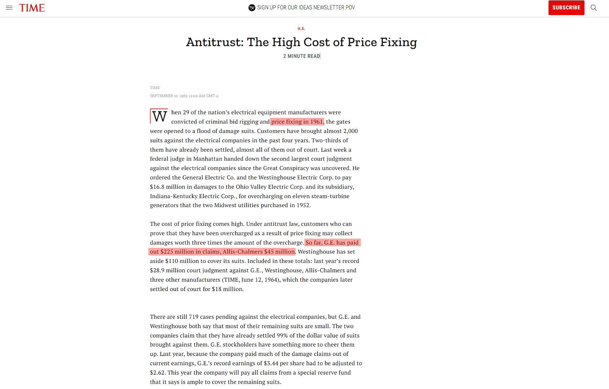
In 1961, twenty-nine electrical-equipment makers were convicted of criminal bid-rigging and price-fixing — the “Great Electrical Conspiracy.” For the first time, executives were jailed.
Treble damages let victims recover 3× the overcharge, so the civil suits dwarfed the fines — nearly 2,000 followed. By 1965, GE had paid ~$225M, Allis-Chalmers $45M, and Westinghouse had set aside $110M.
Price-fixing is a per se criminal violation of the Sherman Act — the surest way a cartel’s “attempt to sustain” ends.
Tacit / Implicit Agreement
Eliminates criminal antitrust risk — but it’s harder to detect cheating.
• Methods to improve detection & retaliation
• Division of the market (by geography or product line)
Example: Most-Favored-Customer clauses
– Seller promises its best price to every customer
– Discourages selective discounts — a cut must go to everyone
– Increases cartel stability · FTC ruled it anticompetitive (DuPont, Ethyl)
Example: Matching / Beating-competition policies
– Customers do the cheating-detection for you
– Retaliation is instant — can promote collusion, not competition
Factors Enhancing Cartel Survival
• Few members with similar goals — easier to agree and to police.
• High barriers to entry — no outsiders to undercut the cartel price.
• Similar cost structures — everyone wants the same price, so the deal holds.
• Legal protection — government cover (a sovereign cartel like OPEC) removes antitrust risk.
• Undifferentiated products — little to compete on but price, so a truce tempts.
• The catch — instability: each member still has an incentive to cheat by exceeding its quota.
The more of these boxes a market checks, the longer collusion lasts — which is why these conditions explain the price stability seen across many oligopolies. But the cheating incentive never disappears, so even disciplined cartels (ADM, OPEC) eventually crack.
Algorithmic Collusion: When the Code Coordinates
Algorithmic collusion: pricing algorithms independently learn to sustain above-competitive prices — cartel outcomes with no human agreement.
Hub & spoke. One vendor (the hub) sells the same pricing tool to rival firms (the spokes). RealPage faced a DOJ suit for allegedly coordinating rent increases across thousands of landlords.
Independent learning. Calvano et al. (AER, 2020): simple reinforcement-learning bots, with no communication, converged on supra-competitive prices — punishing cuts in milliseconds. They learned: never cut.
The Sherman Act needs a “meeting of the minds.” But if algorithms reach cartel prices with no email, no meeting — should the test be whether firms communicated, or whether the outcome looks like coordination?
The Horizon: A Cartel With No Smoking Gun
The threat: what happens when the agreement to fix prices is written by machines — with no human in the loop?
The legal void: the Sherman Act needs a “smoking gun.” Robot cartels leave no emails, no meetings, no paranoia — just a shared tool quietly steering every rival’s prices.
Algorithm (Hub)
Reinforcement Learning Discovers the Monopoly
Long-Term Profit
Profit Margins
(Race to the Bottom)
Through millions of simulated trials, the code learns on its own that price wars destroy revenue. Without ever communicating or exchanging data, rival algorithms settle on mutually beneficial, artificially high prices (Calvano et al., AER 2020).
The Millisecond Match
Human Time
Cut
a competitor notices.
Algorithm Time
Cut
the rival matches the cut.
If Algorithm A tests a price cut to steal share, Algorithm B matches it in ~3 ms. A gains zero volume — both simply earn less per unit. So the bots learn one rule: never cut prices.
Economist at Work: When Does Algorithmic Pricing Collude?
Does algorithmic pricing always build a robot cartel? In my own research, the answer turns on market structure.
Gas stations — oligopoly
Few firms, identical product. Algorithmic pricing raised margins +38% (Assad et al. 2024) — textbook tacit collusion.
Airbnb — monopolistic competition
Airbnb’s algorithmic-pricing rollout moved prices just +0.5–1.9% — and not statistically robust (Piao 2026).
Why so different? Airbnb isn’t an oligopoly — it’s monopolistic competition: thousands of differentiated listings (location, amenities, host reputation) with low barriers to entry. With so many distinct sellers, no algorithm can herd them to one cartel price.
Piao (2026), Algorithmic Pricing, Market Conduct & Antitrust Risk.
The antitrust worry is real — but it’s concentrated in homogeneous oligopolies (gas, hotels), not differentiated platforms. Structure, not the algorithm, decides whether pricing software becomes a cartel.
Algorithmic Collusion & the Folk Theorem
Theory and Data 14.2 — Calvano et al. (2020, AER)
Naive Q-learning pricing agents — no instruction to collude, no communication — independently learn supracompetitive prices with grim-trigger-style punishment phases. Cartel outcomes emerge from learning alone.
Two 2024 actions — do NOT conflate
DOJ + 8 state AGs v. RealPage (Aug 23 2024): Sherman §1 horizontal price coordination via a hub. FTC 6(b) inquiry (Jul 23 2024): a market study of surveillance pricing — not enforcement, different statute, different theory of harm.
Heads Up 14.4 — the folk theorem
Grim trigger is one case of a vast result (Friedman 1971; Fudenberg-Maskin 1986): for \(\delta\) near \(1\), any individually rational payoff is an SPNE. The sustainable set is huge — the theorem doesn't say which point gets played. Q-learning is one selection mechanism.
When the game repeats forever
The Evolution of Cooperation
Robert Axelrod’s famous tournament: what strategy actually wins a repeated prisoner’s dilemma?
The Famous Tournament
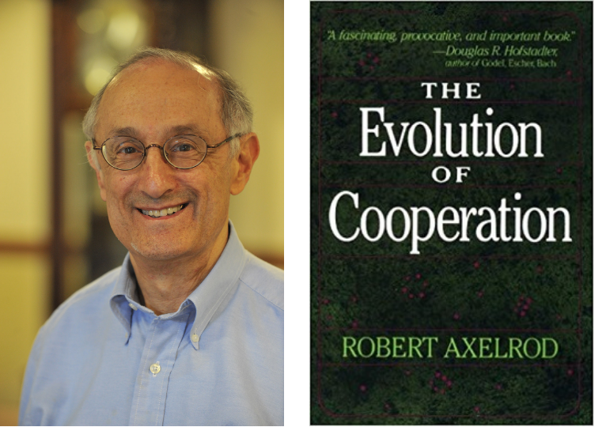
Robert Axelrod (1943–)
• Research explaining the evolution of cooperation.
• Used the prisoner’s dilemma to describe human societies and the evolutionary biology of animal behavior.
• Hosted famous tournaments: experts submit a strategy to play an infinitely* repeated prisoner’s dilemma.
“The contestants ranged from a 10-year-old computer hobbyist to professors of computer science, economics, psychology, mathematics, sociology, political science, and evolutionary biology.”
• Book: The Evolution of Cooperation (1984) — among the most-cited works in all of political science.
* Each round had a 0.00346 probability of ending the game — ensuring, on average, 200 rounds of play.
The Famous Tournament — The Rules
• Players: floppy disks — all random pairs (💾 vs. 💾).
• Strategies: a program with preprogrammed instructions for each move.
• Payoffs: total points from all rounds.
• Repeated game: ending probability 0.00346 → about 200 rounds.
Goal: win as many points as possible.
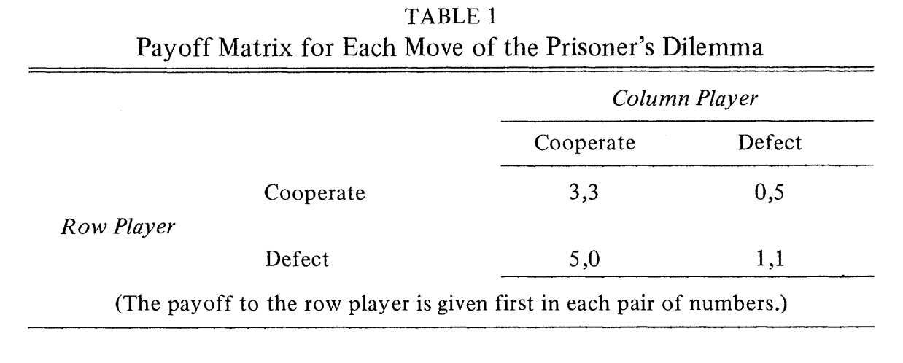
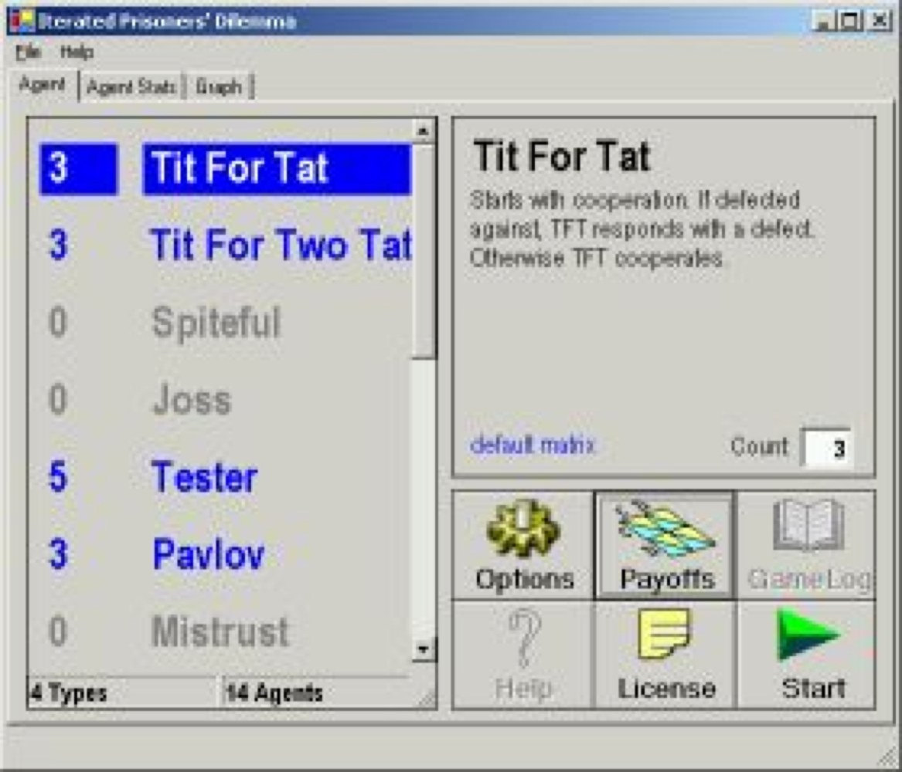
Axelrod, R. (1980). Effective Choice in the Prisoner’s Dilemma. The Journal of Conflict Resolution, 24(1), 3–25.
Result: Tit for Tat Wins
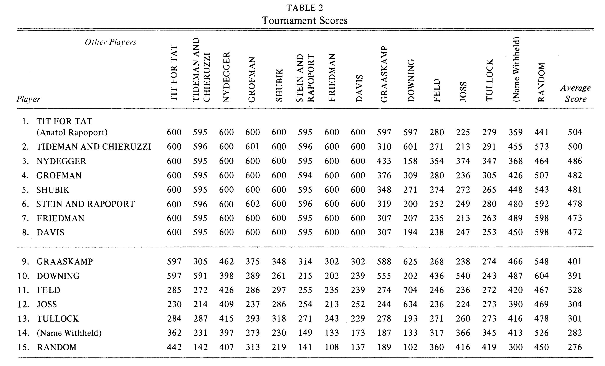
Tit for Tat (Anatol Rapoport’s 4-line program) won with the highest average score (504). The striking pattern: the top 8 strategies are all “nice” — none is ever the first to defect.
Tit for Tat — the 5-line champion
• Submitted by Professor Anatol Rapoport (University of Toronto) — the simplest entry (5 lines of code), and it won.
• The rule:
– Cooperate on the first round.
– On round t > 1, simply copy what your opponent did on round t − 1.
| 1 | 2 | 3 | 4 | 5 | 6 | 7 | 8 | 9 | Score | |
|---|---|---|---|---|---|---|---|---|---|---|
| Tit for Tat | C (3) | C (0) | D (5) | C (3) | C (3) | C (3) | C (0) | D (5) | C (3) | 25 |
| Other | C (3) | D (5) | C (0) | C (3) | C (3) | C (3) | D (5) | C (0) | C (3) | 25 |
It mirrors the opponent: a defect is answered once (red), then it forgives and returns to cooperating.
Joss — the sneak
• A sneaky Tit-for-Tat variant that tries to get away with occasional defection: it always retaliates, but 10% of the time it defects even after the opponent cooperated.
• That one defect triggers a long echo of mutual punishment — both end up below pure cooperation, so its tournament performance was terrible.
| 1 | 2 | 3 | 4 | 5 | 6 | 7 | 8 | 9 | 10 | Score | |
|---|---|---|---|---|---|---|---|---|---|---|---|
| Joss | C (3) | C (3) | D (5) | C (0) | D (5) | C (0) | D (5) | C (0) | D (5) | C (0) | 26 |
| Tit for Tat | C (3) | C (3) | C (0) | D (5) | C (0) | D (5) | C (0) | D (5) | C (0) | D (5) | 26 |
Round 3 = the 10% random defection → an endless echo. After 10 rounds it’s tied 26–26 — both far below the 30 each of pure cooperation. The sneak backfires.
Graaskamp — the scheduled defector
• Another Tit-for-Tat variant — nice and retaliatory…
• …but it sneaks in a single planned defection on round 50 to probe for a soft opponent. Against a reciprocator, that probe just starts a feud.
| … | 48 | 49 | 50 | 51 | 52 | … | |
|---|---|---|---|---|---|---|---|
| Graaskamp | … | C (3) | C (3) | D (5) | C (0) | D (5) | … |
| Tit for Tat | … | C (3) | C (3) | C (0) | D (5) | C (0) | … |
The round-50 probe (red) costs more than it ever gains.
Friedman — the grim trigger
• A totally unforgiving rule: never the first to defect, but the instant the opponent defects even once, it defects forever.
• The least forgiving of the “nice” rules — and it scored the lowest of them.
vs. Tit for Tat — perfect peace
| 1 | 2 | 3 | 4 | 5 | 6 | 7 | 8 | 9 | Score | |
|---|---|---|---|---|---|---|---|---|---|---|
| Friedman | C (3) | C (3) | C (3) | C (3) | C (3) | C (3) | C (3) | C (3) | C (3) | 27 |
| Tit for Tat | C (3) | C (3) | C (3) | C (3) | C (3) | C (3) | C (3) | C (3) | C (3) | 27 |
vs. Joss — one slip, then permanent war
| 1 | 2 | 3 | 4 | 5 | 6 | 7 | 8 | 9 | Score | |
|---|---|---|---|---|---|---|---|---|---|---|
| Friedman | C (3) | C (3) | C (3) | C (3) | C (3) | C (0) | D (5) | D (1) | D (1) | 22 |
| Joss | C (3) | C (3) | C (3) | C (3) | C (3) | D (5) | C (0) | D (1) | D (1) | 22 |
Joss slips on round 6 → Friedman defects for good (rounds 7–9).
Trigger Strategies
Tit-for-tat: cooperate first, then do whatever your rival did last period. Cooperate if they did; retaliate if they cut — then forgive when they return.
Grim trigger: cooperate until the first defection — then defect forever. No forgiveness. A harsher but powerful deterrent.
Axelrod’s tournaments (1980s): game-theory strategies competed at repeated prisoner’s dilemma. Tit-for-tat won — because it was cooperative, retaliatory, forgiving, and clear. It never beats any single rival, yet outperforms everything over the long run.
The Evolution of Cooperation: 4 Keys to Winning
Axelrod found that the top strategies all shared four properties:
Be nice. Start cooperative — never defect first.
Don’t be a pushover. Retaliate — answer a defection with a defection.
Be forgiving. Return to cooperation once they stop defecting.
Don’t be too clever. Stay clear and predictable so others can trust you.
Iterated Prisoner’s Dilemma: Ending the Arms Race
Ending the arms race with a START
On 31 July 1991, President George H.W. Bush and Soviet President Mikhail Gorbachev signed the START Treaty, capping the ICBMs and nuclear warheads each country could hold. Weapons above the agreed number would be disarmed and the silos destroyed.
Iterated Prisoner’s Dilemma: It Worked
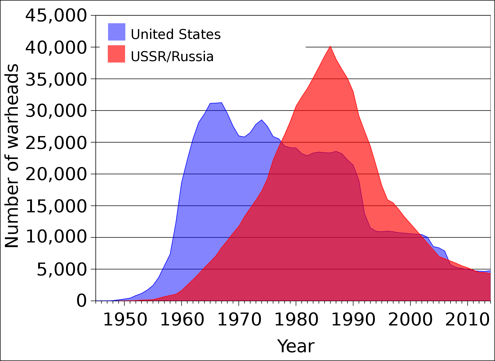
T4T| USSR | |||
| Disarm | Arm | ||
| US | Disarm | 3, 3 | 1, 4 |
| Arm | 4, 1 | 2, 2 | |
Ordinal payoffs (4 = most preferred, 1 = least). Each side’s dream is to arm while the other disarms — so (Arm, Arm) is the one-shot trap. But played year after year, reciprocity (tit-for-tat) let both walk the stockpiles down.
But What If the Signal Is Noisy?
Two pure Tit-for-Tat players cooperate forever… until one stray, accidental defection.
| 1 | 2 | 3 | 4 | 5 | 6 | 7 | 8 | 9 | … | |
|---|---|---|---|---|---|---|---|---|---|---|
| Tit for Tat | C | C | C | C | C | D | C | D | C | … |
| Tit for Tat | C | C | C | C | C | C | D | C | D | … |
Endless echo: the accident ricochets back and forth — they never sync back up.
| 1 | 2 | 3 | 4 | 5 | 6 | 7 | 8 | 9 | … | |
|---|---|---|---|---|---|---|---|---|---|---|
| Tit for Tat | C | C | C | C | C | D | D | D | D | … |
| Tit for Tat | C | C | C | C | C | D | D | D | D | … |
Permanent war: both retaliate forever — cooperation collapses.
Noise in the Real World
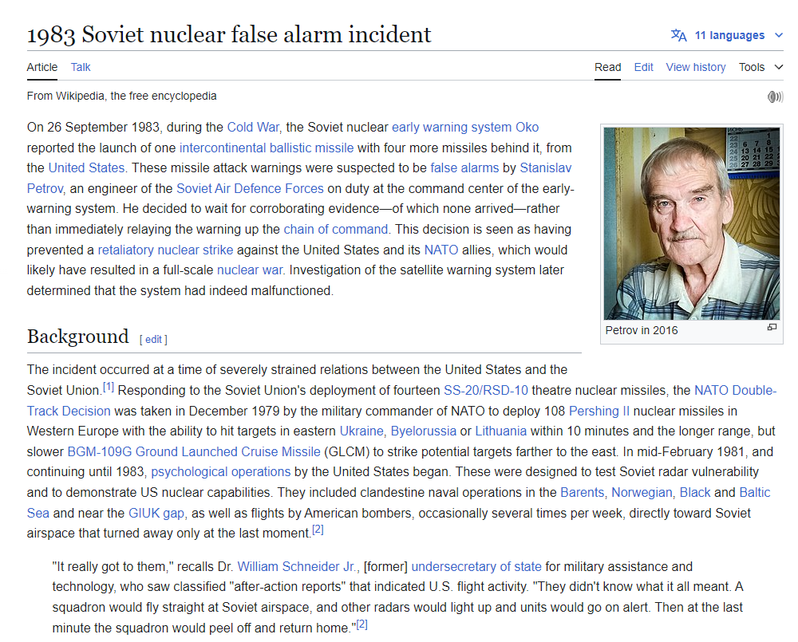
On 26 Sept 1983, a Soviet early-warning system falsely reported five US missiles inbound — pure noise. Officer Stanislav Petrov waited for corroboration instead of retaliating. Had he “played Tit-for-Tat,” the accident could have triggered all-out nuclear war.
The Fix: A Little Forgiveness
Generous Tit for Tat — retaliate only 90% of the time
| Tit for Tat | … | D | C | C | C | C | C | C | … |
| Generous TFT | … | C | C10% | C | C | C | C | C | … |
Occasionally forgiving (10% of the time) lets an accident wash out — no feud starts.
Tit for Two Tats — wait for two defections before hitting back
| Tit for Tat | … | D | C | C | C | C | C | C | … |
| Tit for 2 Tats | … | C | C | C | C | C | C | C | … |
A lone defection is ignored (it only punishes two in a row) — so a single blip never spirals.
Nowak & Sigmund (1992): both beat strict tit-for-tat under noise — which is why durable oligopolies tolerate small deviations rather than igniting a price war.
Cooperation in Nature: Stickleback Fish
• When a predator appears, one or more sticklebacks approach to inspect it — dangerous, but it reveals if the predator is hungry (flee) or not (stay).
• Milinski (1987) showed they play Tit-for-Tat: two fish advance together,
– Cooperate = move forward
– Defect = hang back
• A fish advances only as far as its partner does — reciprocity, fin by fin.
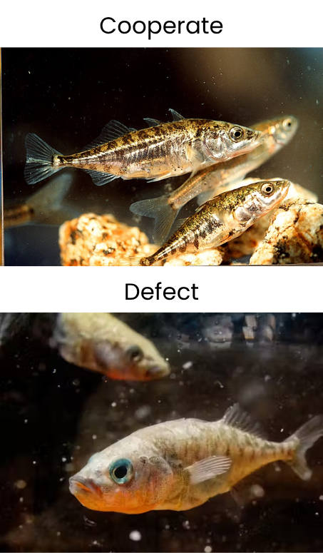
Milinski, M. (1987). “Tit for Tat in sticklebacks and the evolution of cooperation,” Nature.
Cooperation in Nature: Vampire Bats
• Vampire bats starve after ~60 hours without a blood meal — and a bad night is common.
• They feed each other by regurgitating blood: a big benefit to the recipient, a real cost to the giver.
• Wilkinson (1984): bats that received food are more likely to give it later —
– Reciprocal altruism: sharing tracks past help and familiarity.
– They recognize genuine need (near-starvation) vs. a temporary dip.
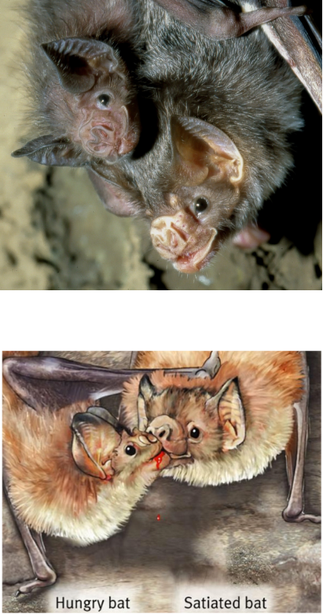
Wilkinson, G. (1984). “Reciprocal Altruism in Bats and Other Mammals,” Ethology and Sociobiology 9(2–4): 85–100.
Human Social Cooperation
“In civilized society [man] stands at all times in need of the cooperation and assistance of great multitudes… and it is in vain for him to expect it from their benevolence only.”
“…It is not from the benevolence of the butcher, the brewer, or the baker, that we expect our dinner, but from their regard to their own interest.” (Book I, Ch. 2)
Adam Smith
1723–1790
Adam Smith (1776), An Inquiry into the Nature and Causes of the Wealth of Nations.
Economist at Work: Amazon’s Project Nessie
From ~2014–2019, Amazon allegedly ran an algorithm, “Project Nessie,” that tested whether rivals would follow its price increases. Raise a price; watch the competitors. If they matched, hold it. If not, reverse it.
Allegedly generated $1B+ in excess revenue (FTC v. Amazon, 2023). It was an automated tit-for-tat — no back-room meeting, just code.
The deep question for antitrust: if an algorithm produces the same prices as an illegal cartel, does it matter that no human picked up the phone? (FTC trial scheduled October 2026.)
Beyond the Prisoner’s Dilemma
Coordination Games
When your best move is to match the other player — or to do the opposite
Pure Coordination: Where Do We Meet?
Pure coordination game: it doesn’t matter which strategy the players pick — only that they pick the same one. No conflict of interest.
You agreed to meet a classmate at Dunkin to study — but never swapped phone numbers. There are two Dunkin locations near campus.
Which one do you walk to?
Two pure-strategy Nash equilibria:
• (Hayden, Hayden)
• (Shillman, Shillman)
You both just want to match. The hard part is agreeing which — without talking. A shared landmark or habit (a focal point) usually breaks the tie.
| Classmate | |||
|---|---|---|---|
| Hayden | Shillman | ||
| You | Hayden | 1, 1NE | 0, 0 |
| Shillman | 0, 0 | 1, 1NE | |
Battle of the Sexes: Coordination With Conflict
Now the players still want to match — but they disagree on which outcome. A coordination game with a conflict of interest.
You and a friend will spend Saturday together, but never settled the plan. You’d rather hit Six Flags; your friend would rather go hiking. Both of you prefer being together over going alone.
Both beat going alone, so each is stable — but the two of you rank them oppositely. Coordinating is no longer enough; which equilibrium becomes a bargaining problem (who commits, arrives first, or makes it a habit).
| Friend | |||
|---|---|---|---|
| Six Flags | Hiking | ||
| You | Six Flags | 2, 1NE | 0, 0 |
| Hiking | 0, 0 | 1, 2NE | |
Where do you each show up?
Two pure-strategy Nash equilibria:
• (Six Flags, Six Flags) — you happier
• (Hiking, Hiking) — friend happier
Chicken: The Anti-Coordination Game
Two strategies per player: act tough or act weak.
Each player prefers to act tough and have the other one back down…
…but if both act tough, they get the worst outcome for everyone (−2, −2) — the crash.
It’s the mirror image of coordination: here each wants to do the opposite of the other. Often called an anti-coordination game.
| Column | |||
|---|---|---|---|
| Weak | Tough | ||
| Row | Weak | 0, 0 | −1, 1 |
| Tough | 1, −1 | −2, −2 | |
Row payoff first · Column payoff second
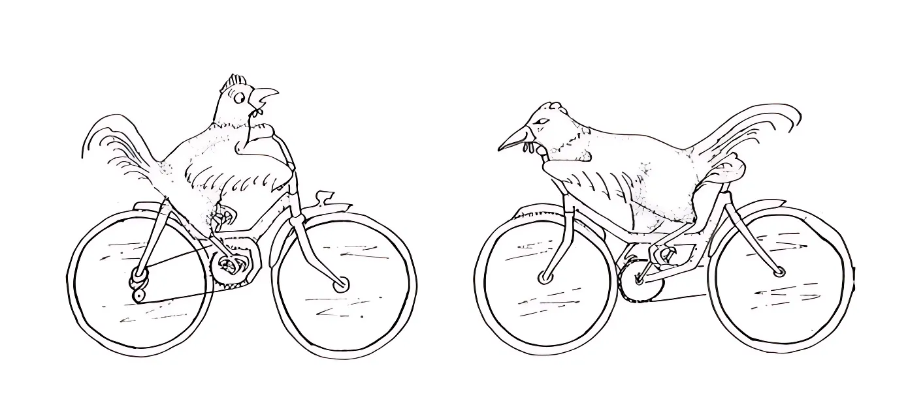
Chicken: Two Equilibria, Pick a Lane
A movie staple: two cars race straight at each other (or toward a cliff edge). Swerve and you’re the “chicken”; go Straight and hold your nerve.
Two pure-strategy Nash equilibria:
• (Straight, Swerve) — Row’s preferred
• (Swerve, Straight) — Column’s preferred
So long as they pick different moves, they dodge the crash. The model can’t say which equilibrium occurs — it comes down to nerve and credibility.
| Column | |||
|---|---|---|---|
| Swerve | Straight | ||
| Row | Swerve | 0, 0 | −1, 1NE |
| Straight | 1, −1NE | −2, −2 | |
Real-world Chicken — SAG-AFTRA, 2024–25: actors demanded AI-consent protections; studios held out. After 11 months of mutual loss, the studios swerved — July 2025: a 15.17% raise + AI guardrails.
Chicken on Screen: Footloose (1984)

Two players drive tractors straight at each other. First to jump off is the “chicken.”
Ren’s foot catches in the pedal — he can’t jump off even if he wants to. By accident he does the one thing that wins Chicken: he removes his own option to swerve, and the other driver bails.
▶ Click the poster to play (sound on).
Weaponizing Credibility: Throw Away the Wheel
In Chicken your best move depends entirely on what your opponent believes you’ll do. So don’t try to out-nerve them — change what they believe is possible.
The binding mechanism
Visibly, irreversibly destroy your own ability to swerve — rip out the steering wheel and toss it out the window, where your rival can see it go.
Why it works
A rational rival who sees you can’t swerve must swerve themselves. You’ve transferred 100% of the burden of avoidance onto them.
Fewer options can make you stronger. A credible, irreversible commitment collapses Chicken’s two equilibria down to the one you want. Burning bridges, a union strike fund, a “no-negotiation” law, a doomsday device — all work the same way. (Schelling, The Strategy of Conflict, 1960.)
Diagnostic Comparison: Two Architectures of Conflict
| Prisoner’s Dilemma | Game of Chicken | |
|---|---|---|
| Core mechanic | Temptation to betray | Test of endurance |
| Dominant strategy? | Yes — always defect | No — depends on the opponent |
| Winning tactic | Follow the math | Weaponize credibility |
| Worst-case scenario | Sub-optimal stability | Catastrophic mutual destruction |
| Real-world example | The Cola Wars (Coke vs. Pepsi) | SAG-AFTRA strike |
Same surface — two players, two choices — but opposite engines. A Prisoner’s Dilemma is solved by changing the payoffs; a game of Chicken is solved by changing what your rival believes.
§14.3
Mixed-Strategy Nash Equilibrium
When no pure profile is stable — randomize, and make your rival indifferent
Penalty Kick
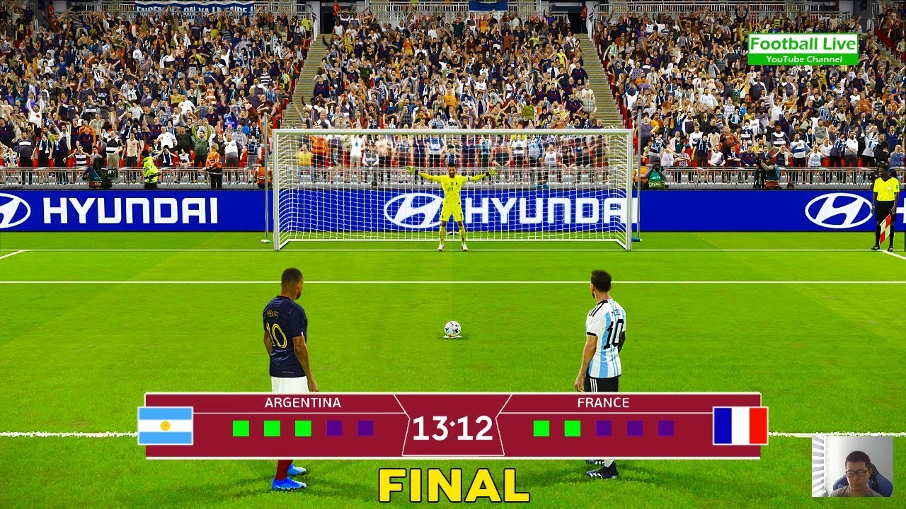
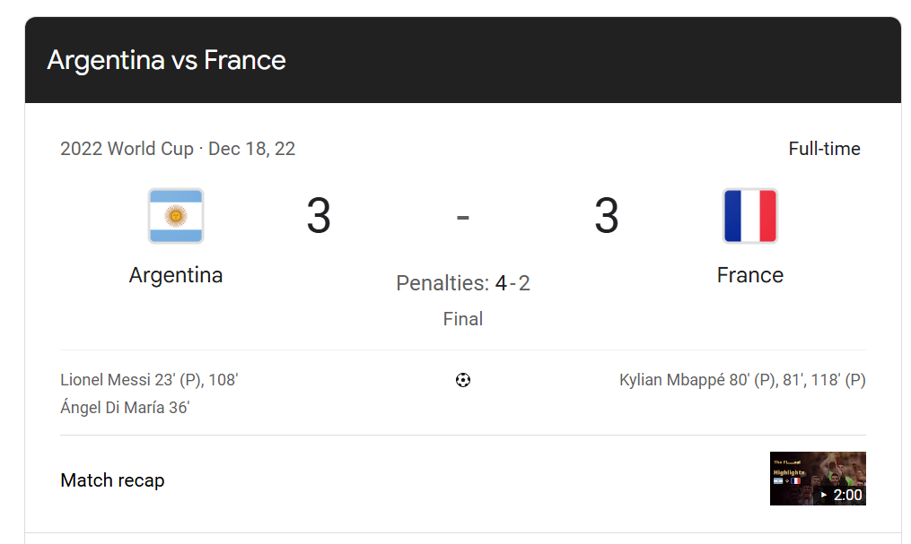
A penalty shootout is a mixed-strategy game: the kicker can’t commit to one side (the goalie would learn it), and the goalie can’t either. Each must keep the other guessing.
Mixed Strategies
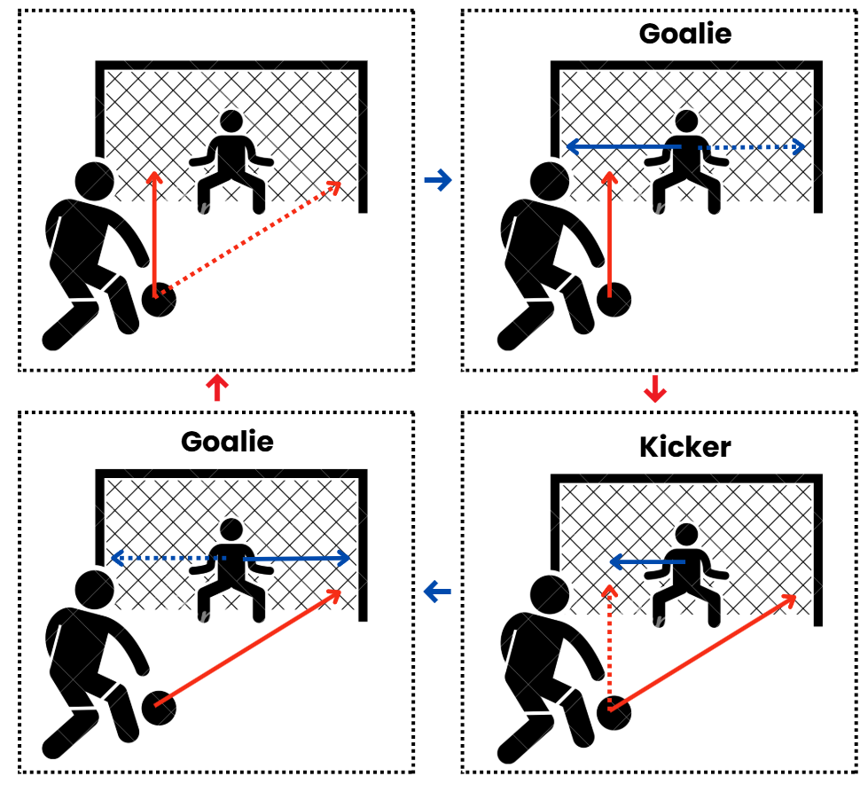
THE PAYOFF MATRIX FOR THIS GAME:
| Goalie: Left | Goalie: Right | |
|---|---|---|
| Kicker: Left | 0, 1 ✓ | ✓ 1, 0 |
| Kicker: Right | ✓ 1, 0 | 0, 1 ✓ |
No single cell has two checks — so there is no pure-strategy equilibrium.
But a Nash equilibrium still exists: it calls for each player to randomize across the two strategies.
Mixed Strategies
As highlighted by the previous slides, sometimes there is no pure-strategy equilibrium. A player’s best option may be to choose actions randomly from a set of pure strategies.
Mixed strategy
A strategy in which the player randomizes his or her actions — a probability distribution over the available pure strategies.
Our example: a penalty kick
- The kicker can kick the ball left or right.
- The goalie chooses which way to dive.
- Same side → the goal is saved; otherwise it is scored.
Neither player can commit to one side — the rival would simply learn it and best-respond. The only stable play is to randomize, keeping the other guessing.
Mixed Strategies — The Goalie’s Best Response
PAYOFF MATRIX — (kicker, goalie)
| Goalie: L | Goalie: R | |
|---|---|---|
| Kicker: L | 0, 1 | 1, 0 |
| Kicker: R | 1, 0 | 0, 1 |
The goalie earns 1 for a save (she dives the kicker’s way) and 0 otherwise. Her expected payoff is a weighted average over the kicker’s mix (Left with prob \(p\)):
\(E[\text{dive Left}] = p(1) + (1-p)(0) = p\)
\(E[\text{dive Right}] = p(0) + (1-p)(1) = 1-p\)
Kicker: 50% Left
Dive Left: 0.5(1)+0.5(0) = 0.50
Dive Right: 0.5(0)+0.5(1) = 0.50
Goalie indifferent.
Nash equilibrium
Kicker: 80% Left
Dive Left: 0.8(1)+0.2(0) = 0.80
Dive Right: 0.8(0)+0.2(1) = 0.20
Best response: dive LEFT.
Kicker should switch to Right
Kicker: 20% Left
Dive Left: 0.2(1)+0.8(0) = 0.20
Dive Right: 0.2(0)+0.8(1) = 0.80
Best response: dive RIGHT.
Kicker should switch to Left
Only at 50/50 is the goalie indifferent, so the kicker can’t be exploited — that is the mixed-strategy Nash equilibrium. Any predictable mix lets the goalie pick a pure best response, which the kicker would then want to deviate from. (With asymmetrical payoffs, the equilibrium mix shifts away from 50/50.)
Does Anyone Actually Mix? — Penalty Kicks
Theory and Data 14.1 — Chiappori-Levitt-Groseclose (2002, AER)
A penalty kick is stylized matching pennies: kicker picks a corner, goalie picks a corner; same corner favors the goalie. The mixed-NE prediction: scoring probability is equal across the kicker's choices (else shift weight).
French + Italian top divisions, 1995–2000: Left and Right scoring rates were 76% vs 76% — statistically indistinguishable, exactly the indifference condition. Replicated in tennis serves (Walker-Wooders 2001) and Spanish soccer (Palacios-Huerta 2003).
Heads Up 14.2 — a pure NE may not exist, but a mixed one always does
Nash's 1950 theorem: every finite game has at least one Nash equilibrium (possibly mixed). Can't find a pure NE? Solve the indifference condition for the mixed one.
The counterpoint: Kovash-Levitt (2009) find MLB pitchers and NFL play-callers deviate from minimax — too many fastballs, too few passes. When the action space is large and cognitive load high, players fall into predictable patterns. Mixed-NE holds for penalty kicks and tennis, not for baseball.
The Maximin Strategy
Or: what if my opponent is an idiot?
A Nash equilibrium assumes rational play. What if players make systematic errors — not optimizing their own payoffs?
- A rational player facing less-than-rational opponents may prefer a more conservative strategy.
A maximin strategy minimizes your exposure to loss — choose the strategy with the largest minimum payoff across all of your opponent’s possible choices.
| B: Don’t invest | B: Invest | A’s row min | |
|---|---|---|---|
| A: Don’t invest | ✓0, 0 | −10, 10✓ | −10 ← MAX |
| A: Invest | −100, 0 | ✓20, 10✓ | −100 |
The Nash equilibrium is (Invest, Invest) — but if B might err, A’s maximin is Don’t invest (worst case −10, vs −100).
§14.4
Sequential Games & Backward Induction
When one player moves first — credible commitment, non-credible threats, and SPNE
The Game Tree & Backward Induction
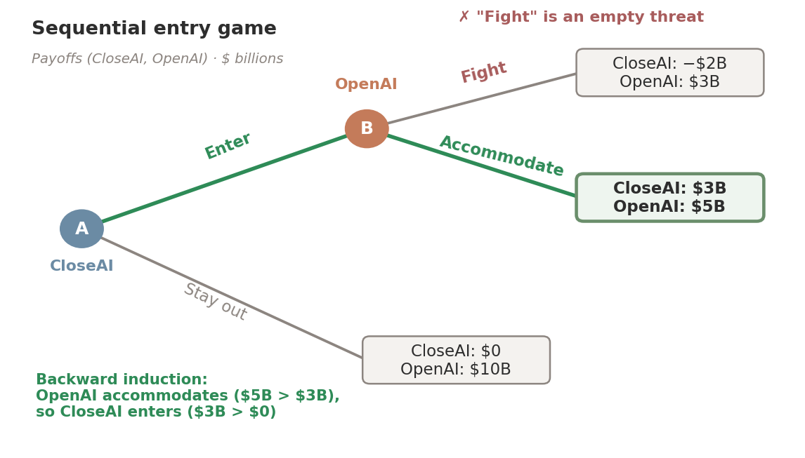
One player moves first, the other responds. Solve by backward induction — start at the last move and work back. CloseAI can’t choose until it knows how OpenAI will react, so it puts itself in OpenAI’s shoes: “If I enter, will they really fight?”
OpenAI (B, last mover): Accommodate ($5B) > Fight ($3B) → it accommodates.
CloseAI (A, looking ahead): Enter ($3B) > Stay out ($0) → it enters.
OpenAI’s threat to “fight any entrant” is empty — once CloseAI is in, fighting only hurts OpenAI too. A non-credible threat doesn’t deter.
Making the threat credible (Dixit 1980). If the incumbent first sinks a cost — extra capacity, R&D, an exclusive contract — that lowers its post-entry cost, so fighting becomes its best response. Now the threat is real and the SPNE flips to “invest → entrant stays out” — entry deterred. The sunk cost is the commitment device; we formalize it next.
Strategic Investment: Making the Threat Credible
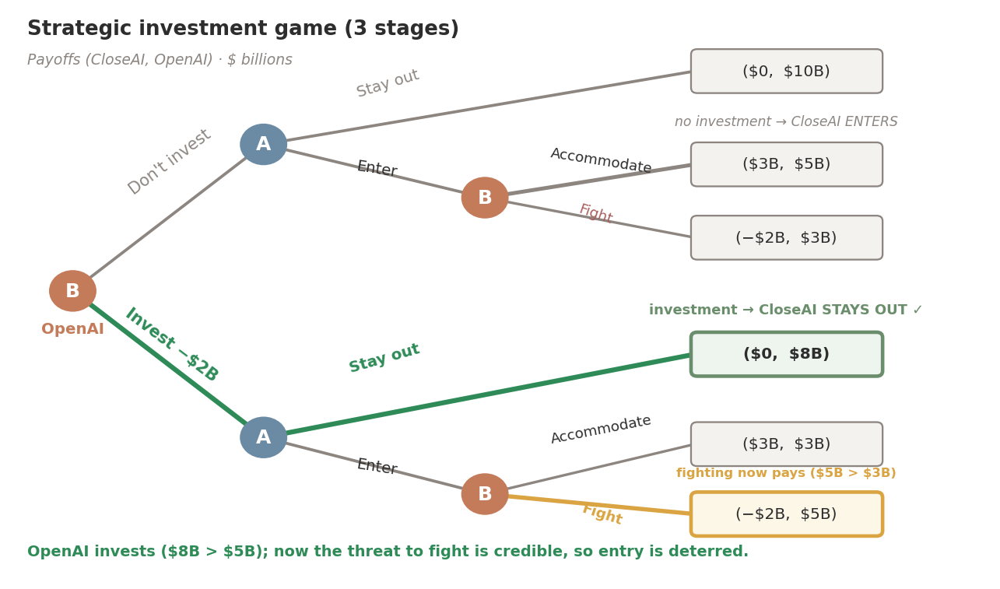
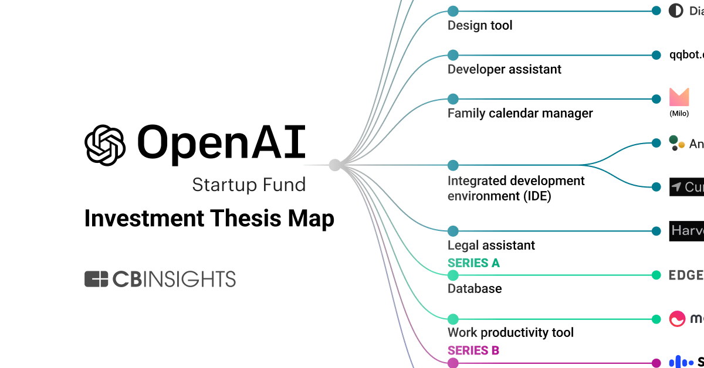
OpenAI’s Startup Fund — investing around its models to raise barriers.
Add a first move: OpenAI invests −$2B. Now winning a price war is cheap, so fighting pays ($5B > $3B) — the threat is credible.
CloseAI looks ahead, expects a fight, and stays out. OpenAI keeps the market: $8B > $5B.
An investment that’s never even used still wins — by changing what the rival believes OpenAI will do. That’s strategic investment / entry deterrence: the same credible-commitment logic as the Dixit game (§14.4), now with capacity on the line.
Stackelberg: First-Mover Advantage
Stackelberg competition: a leader commits to output first; the follower observes and responds. By over-committing to a large quantity, the leader forces the follower to produce less — and claims the bigger share.
NVIDIA vs. AMD. NVIDIA holds ~80–92% of AI accelerators; its CUDA ecosystem makes its lead a credible, irreversible commitment. It sets premium prices (leader); AMD (<10%) prices underneath as the value follower — exactly what the model predicts.
First-mover advantage isn’t automatic. It needs a credible, irreversible commitment (Boeing announcing huge 787 runs to deter Airbus) and a follower who responds by pulling back. If the leader can easily reverse course, the follower ignores the bluff.
Trees, Subgames, and Credible Threats
Many interactions are sequential: one firm moves, others observe, then respond (Stackelberg was one). The extensive form is a tree — decision nodes labeled by player, branches for actions, payoffs at the leaves.
A strategy specifies an action at every node where it's your turn — even off-path nodes, because we must evaluate counterfactuals.
A subgame starts at any node and includes everything below it.
A subgame-perfect Nash equilibrium (SPNE) induces a Nash equilibrium in every subgame — including off-path ones. It rules out non-credible threats: actions that wouldn't actually be optimal if that node were reached.
Backward induction finds it: start at the deepest nodes, pick each player's optimal action, fold those payoffs up into the parent, and repeat to the top.
Why SPNE, not just Nash? A plain Nash equilibrium can rest on a threat the threatener would never carry out. SPNE demands the threat be optimal at the node where it would be executed — credibility, built in.
Application: Google's \$26B Default Deals as Commitment
\$26B
/yr to Apple, Samsung, Mozilla for default search
Aug 2024
Judge Mehta: Sherman §2 violation
The DOJ argued the payments are a Dixit-style entry barrier: Google's commitment to keep paying for default placement deters Bing and DuckDuckGo, who can't match the payments — they have less monopoly rent to share with the platforms.
The remedy phase (concluded Sept 2 2025) rejected the DOJ's request to divest Chrome and Android. Mehta chose a behavioral remedy: no exclusive default contracts going forward; share some user-interaction data with rivals.
Whether banning the contract unwinds the commitment is now the open empirical question — watch Bing's share and default placements on new phones over 2025–2027.
Walkthrough 14.6 — Stackelberg Is an SPNE
Problem. Recall Ch 13's Stackelberg: \(P = 100 - Q\), both \(MC = 20\). Leader picks \(q_1\); follower observes and picks \(q_2\). Solve by backward induction — and recognize the result.
Solve
Stage 2 (follower): \(q_2 = (80 - q_1)/2\).
Stage 1 (leader): substitute → \(\pi_1 = (40 - q_1/2)q_1\); FOC \(\Rightarrow q_1^{\ast} = 40\).
\(q_2^{\ast} = 20\), \(Q = 60\), \(P = \$40\), \(\pi_1 = \$800\), \(\pi_2 = \$400\).
Check vs Cournot
Cournot: \(Q = 53.33\), \(P = \$46.67\), each \(\pi = \$711\), total \(\$1,422\).
Stackelberg total \(60 > 53.33\) → lower price (\(\$40 < \$46.67\)). Leader earns more (\$800), follower less (\$400); industry \$1,200.
It's the SPNE of the 2-stage game — exactly Ch 13's W13.6 numbers.
Takeaway. Ch 13's Stackelberg solution is the subgame-perfect equilibrium of the sequential quantity game. The first-mover advantage is the formal content of “leader commits to high output, follower best-responds with less” — and the commitment is credible because produced output is irreversible.
Chapter 14 — The Equilibrium Ladder
Nash equilibrium (§14.1–14.2). A profile where no one deviates unilaterally. The PD shows it need not be efficient; BoS shows it need not be unique. IESDS is a sound search.
Mixed-strategy NE (§14.3). When no pure NE exists, randomize so the rival is indifferent. Nash (1950): every finite game has one.
SPNE (§14.4). Backward induction on the tree rules out non-credible threats. Stackelberg is the SPNE of the sequential quantity game.
Repeated games (§14.5). Finite horizons unravel; infinite ones sustain cooperation iff \(\delta \geq \frac{T-R}{T-P}\). Cournot cartel: \(\delta^{\ast} = 9/17\).
Folk theorem. For \(\delta\) near \(1\), almost any individually rational payoff is sustainable — selection (focal points, Q-learning) decides which.
Reach (§14.6). Entry deterrence, OPEC+, algorithmic collusion, spectrum auctions, R&D races — with level-\(k\)/QRE for real deviations.
One idea, escalating. Every concept is “no player wants to deviate” applied to a richer setting — pure, then mixed, then sequential, then repeated. The streaming four-firm constellation sat at static Nash, not above it: differentiation, not active collusion, explains the cluster. The thread retires here.
Part IV — complete
Questions?
Next: Chapter 15 — Decisions Under Uncertainty. We close strategic interaction and open Part V (Market Failures) with risk, expected utility, and insurance.
Game Theory Is Everywhere
Modeling Social Interactions
The same games that explain cartels run on the sidewalk outside